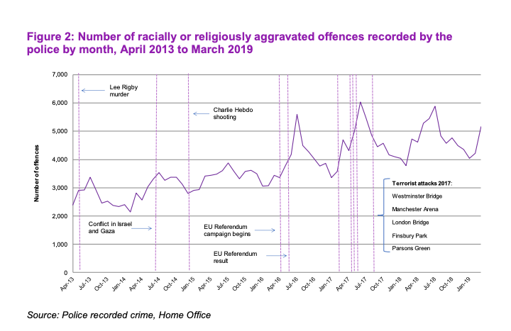
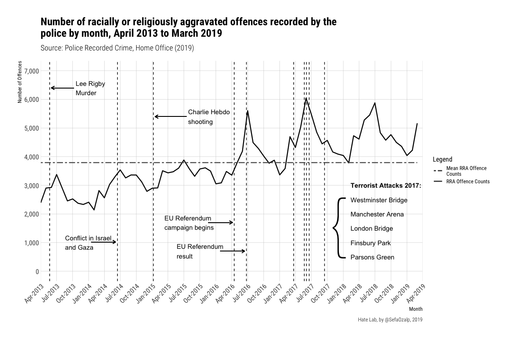

Time Series Analysis of RRA Offences Recorded by the Police in the UK
Sefa Ozalp
2019-11-28
Last updated: 2020-01-29
Checks: 6 1
Knit directory: hatelab_website/
This reproducible R Markdown analysis was created with workflowr (version 1.4.0). The Checks tab describes the reproducibility checks that were applied when the results were created. The Past versions tab lists the development history.
The R Markdown file has staged changes. To know which version of the R Markdown file created these results, you’ll want to first commit it to the Git repo. If you’re still working on the analysis, you can ignore this warning. When you’re finished, you can run wflow_publish to commit the R Markdown file and build the HTML.
Great job! The global environment was empty. Objects defined in the global environment can affect the analysis in your R Markdown file in unknown ways. For reproduciblity it’s best to always run the code in an empty environment.
The command set.seed(20191014) was run prior to running the code in the R Markdown file. Setting a seed ensures that any results that rely on randomness, e.g. subsampling or permutations, are reproducible.
Great job! Recording the operating system, R version, and package versions is critical for reproducibility.
Nice! There were no cached chunks for this analysis, so you can be confident that you successfully produced the results during this run.
Great job! Using relative paths to the files within your workflowr project makes it easier to run your code on other machines.
Great! You are using Git for version control. Tracking code development and connecting the code version to the results is critical for reproducibility. The version displayed above was the version of the Git repository at the time these results were generated.
Note that you need to be careful to ensure that all relevant files for the analysis have been committed to Git prior to generating the results (you can use wflow_publish or wflow_git_commit). workflowr only checks the R Markdown file, but you know if there are other scripts or data files that it depends on. Below is the status of the Git repository when the results were generated:
Ignored files:
Ignored: .DS_Store
Ignored: .Rhistory
Ignored: .Rproj.user/
Ignored: analysis/.DS_Store
Ignored: data/.DS_Store
Ignored: data/brexit_sole_keyword_ratios_dec19/.DS_Store
Ignored: docs/.DS_Store
Ignored: docs/assets/.DS_Store
Ignored: docs/figure/.DS_Store
Untracked files:
Untracked: analysis/trump_muslim.rmd
Untracked: data/hatedash_comparison_skim.rds
Untracked: data/trump_tweets_html_body.txt
Untracked: data/trump_tweets_islam.json
Untracked: data/trump_tweets_islam_muslim.csv
Untracked: docs/figure/racial_religious_hc_uk.rmd/detrended_ho_plot-1.pdf
Unstaged changes:
Modified: analysis/racial_religious_hc_uk.rmd
Staged changes:
Modified: analysis/racial_religious_hc_uk.rmd
Note that any generated files, e.g. HTML, png, CSS, etc., are not included in this status report because it is ok for generated content to have uncommitted changes.
These are the previous versions of the R Markdown and HTML files. If you’ve configured a remote Git repository (see ?wflow_git_remote), click on the hyperlinks in the table below to view them.
| File | Version | Author | Date | Message |
|---|---|---|---|---|
| html | 37b1fca | Sefa Ozalp | 2019-12-16 | Build site. |
| rmd | 1278791 | Sefa Ozalp | 2019-12-16 | correct references header |
| html | e8d90a5 | Sefa Ozalp | 2019-12-16 | Build site. |
| rmd | 5265e83 | Sefa Ozalp | 2019-12-16 | finalise reproduction and add detrended plot |
| html | 4fb4602 | Sefa Ozalp | 2019-11-28 | Build site. |
| rmd | 09640e0 | Sefa Ozalp | 2019-11-28 | wflow_publish(c(“analysis/index.Rmd”, “analysis/racial_religious_hc_uk.rmd”)) |
Introduction
This document will replicate the ‘Figure 2: Number of racially or religiously aggravated offences recorded by the police by month, April 2013 to March 2019’ from the Hate Crime, England and Wales publication of the Home Office (2019). Next, the data will be detrended by months and quarters and visualised again. 
library(tidyverse)
library(lubridate)
library(scales)
extrafont::fonttable() package afmfile
1 NA Keyboard.afm.gz
2 NA SFNSDisplay.afm.gz
3 NA SFNSRounded.afm.gz
4 NA SFNSText.afm.gz
5 NA SFNSTextItalic.afm.gz
6 NA Andale Mono.afm.gz
7 NA Anonymice Powerline.afm.gz
8 NA Anonymice Powerline Bold.afm.gz
9 NA Anonymice Powerline Bold Italic.afm.gz
10 NA Anonymice Powerline Italic.afm.gz
11 NA Apple Braille.afm.gz
12 NA Apple Braille Outline 6 Dot.afm.gz
13 NA Apple Braille Outline 8 Dot.afm.gz
14 NA Apple Braille Pinpoint 6 Dot.afm.gz
15 NA Apple Braille Pinpoint 8 Dot.afm.gz
16 NA AppleMyungjo.afm.gz
17 NA Arial Black.afm.gz
18 NA Arial Bold Italic.afm.gz
19 NA Arial Bold.afm.gz
20 NA Arial Italic.afm.gz
21 NA Arial.afm.gz
22 NA Arial Narrow.afm.gz
23 NA Arial Narrow Bold.afm.gz
24 NA Arial Narrow Bold Italic.afm.gz
25 NA Arial Narrow Italic.afm.gz
26 NA Arial Rounded Bold.afm.gz
27 NA Arial Unicode.afm.gz
28 NA Arimo for Powerline.afm.gz
29 NA Arimo Bold for Powerline.afm.gz
30 NA Arimo Bold Italic for Powerline.afm.gz
31 NA Arimo Italic for Powerline.afm.gz
32 NA Bodoni Ornaments.afm.gz
33 NA Bodoni 72 Smallcaps Book.afm.gz
34 NA Bradley Hand Bold.afm.gz
35 NA Brush Script.afm.gz
36 NA Comic Sans MS.afm.gz
37 NA Comic Sans MS Bold.afm.gz
38 NA Courier New Bold Italic.afm.gz
39 NA Courier New Bold.afm.gz
40 NA Courier New Italic.afm.gz
41 NA Courier New.afm.gz
42 NA Cousine for Powerline.afm.gz
43 NA Cousine Bold for Powerline.afm.gz
44 NA Cousine Bold Italic for Powerline.afm.gz
45 NA Cousine Italic for Powerline.afm.gz
46 NA 3270Medium.afm.gz
47 NA 3270Narrow.afm.gz
48 NA 3270SemiNarrow.afm.gz
49 NA DejaVu Sans Mono for Powerline.afm.gz
50 NA DejaVu Sans Mono Bold for Powerline.afm.gz
51 NA DejaVu Sans Mono Bold Oblique for Powerline.afm.gz
52 NA DejaVu Sans Mono Oblique for Powerline.afm.gz
53 NA DIN Alternate Bold.afm.gz
54 NA DIN Condensed Bold.afm.gz
55 NA Droid Sans Mono Dotted for Powerline.afm.gz
56 NA Droid Sans Mono Slashed for Powerline.afm.gz
57 NA Georgia.afm.gz
58 NA Georgia Bold.afm.gz
59 NA Georgia Bold Italic.afm.gz
60 NA Georgia Italic.afm.gz
61 NA Go Mono for Powerline.afm.gz
62 NA Go Mono Bold for Powerline.afm.gz
63 NA Go Mono Bold Italic for Powerline.afm.gz
64 NA Go Mono Italic for Powerline.afm.gz
65 NA Hack-Bold.afm.gz
66 NA Hack-BoldItalic.afm.gz
67 NA Hack-Italic.afm.gz
68 NA Hack-Regular.afm.gz
69 NA Impact.afm.gz
70 NA Inconsolata Bold for Powerline.afm.gz
71 NA Khmer Sangam MN.afm.gz
72 NA Lao Sangam MN.afm.gz
73 NA Literation Mono Powerline.afm.gz
74 NA Literation Mono Powerline Bold.afm.gz
75 NA Literation Mono Powerline Bold Italic.afm.gz
76 NA Literation Mono Powerline Italic.afm.gz
77 NA Luminari.afm.gz
78 NA Meslo LG L DZ Bold for Powerline.afm.gz
79 NA Meslo LG L DZ Bold Italic for Powerline.afm.gz
80 NA Meslo LG L DZ Italic for Powerline.afm.gz
81 NA Meslo LG L DZ Regular for Powerline.afm.gz
82 NA Meslo LG L Bold for Powerline.afm.gz
83 NA Meslo LG L Bold Italic for Powerline.afm.gz
84 NA Meslo LG L Italic for Powerline.afm.gz
85 NA Meslo LG L Regular for Powerline.afm.gz
86 NA Meslo LG M DZ Bold for Powerline.afm.gz
87 NA Meslo LG M DZ Bold Italic for Powerline.afm.gz
88 NA Meslo LG M DZ Italic for Powerline.afm.gz
89 NA Meslo LG M DZ Regular for Powerline.afm.gz
90 NA Meslo LG M Bold for Powerline.afm.gz
91 NA Meslo LG M Bold Italic for Powerline.afm.gz
92 NA Meslo LG M Italic for Powerline.afm.gz
93 NA Meslo LG M Regular for Powerline.afm.gz
94 NA Meslo LG S DZ Bold for Powerline.afm.gz
95 NA Meslo LG S DZ Bold Italic for Powerline.afm.gz
96 NA Meslo LG S DZ Italic for Powerline.afm.gz
97 NA Meslo LG S DZ Regular for Powerline.afm.gz
98 NA Meslo LG S Bold for Powerline.afm.gz
99 NA Meslo LG S Bold Italic for Powerline.afm.gz
100 NA Meslo LG S Italic for Powerline.afm.gz
101 NA Meslo LG S Regular for Powerline.afm.gz
102 NA Microsoft Sans Serif.afm.gz
103 NA Monofur Bold for Powerline.afm.gz
104 NA Monofur for Powerline.afm.gz
105 NA Monofur Italic for Powerline.afm.gz
106 NA Noto Mono for Powerline.afm.gz
107 NA NovaMono for Powerline.afm.gz
108 NA ProFont For Powerline.afm.gz
109 NA ProFont Bold For Powerline.afm.gz
110 NA Roboto-Black.afm.gz
111 NA Roboto-BlackItalic.afm.gz
112 NA Roboto-Bold.afm.gz
113 NA Roboto-BoldItalic.afm.gz
114 NA Roboto-Italic.afm.gz
115 NA Roboto-Light.afm.gz
116 NA Roboto-LightItalic.afm.gz
117 NA Roboto-Medium.afm.gz
118 NA Roboto-MediumItalic.afm.gz
119 NA Roboto-Regular.afm.gz
120 NA Roboto-Thin.afm.gz
121 NA Roboto-ThinItalic.afm.gz
122 NA RobotoCondensed-Bold.afm.gz
123 NA RobotoCondensed-BoldItalic.afm.gz
124 NA RobotoCondensed-Italic.afm.gz
125 NA RobotoCondensed-Light.afm.gz
126 NA RobotoCondensed-LightItalic.afm.gz
127 NA RobotoCondensed-Regular.afm.gz
128 NA Roboto Mono Bold for Powerline.afm.gz
129 NA Roboto Mono Bold Italic for Powerline.afm.gz
130 NA Roboto Mono Italic for Powerline.afm.gz
131 NA Roboto Mono Light for Powerline.afm.gz
132 NA Roboto Mono Light Italic for Powerline.afm.gz
133 NA Roboto Mono Medium for Powerline.afm.gz
134 NA Roboto Mono Medium Italic for Powerline.afm.gz
135 NA Roboto Mono for Powerline.afm.gz
136 NA Roboto Mono Thin for Powerline.afm.gz
137 NA Roboto Mono Thin Italic for Powerline.afm.gz
138 NA SpaceMono-Bold.afm.gz
139 NA SpaceMono-BoldItalic.afm.gz
140 NA SpaceMono-Italic.afm.gz
141 NA SpaceMono-Regular.afm.gz
142 NA Space Mono Bold for Powerline.afm.gz
143 NA Space Mono Bold Italic for Powerline.afm.gz
144 NA Space Mono Italic for Powerline.afm.gz
145 NA Space Mono for Powerline.afm.gz
146 NA Symbol Neu for Powerline.afm.gz
147 NA Tahoma.afm.gz
148 NA Tahoma Bold.afm.gz
149 NA Times New Roman Bold Italic.afm.gz
150 NA Times New Roman Bold.afm.gz
151 NA Times New Roman Italic.afm.gz
152 NA Times New Roman.afm.gz
153 NA Tinos for Powerline.afm.gz
154 NA Tinos Bold for Powerline.afm.gz
155 NA Tinos Bold Italic for Powerline.afm.gz
156 NA Tinos Italic for Powerline.afm.gz
157 NA Trattatello.afm.gz
158 NA Trebuchet MS Bold Italic.afm.gz
159 NA Trebuchet MS.afm.gz
160 NA Trebuchet MS Bold.afm.gz
161 NA Trebuchet MS Italic.afm.gz
162 NA Ubuntu Mono derivative Powerline Bold.afm.gz
163 NA Ubuntu Mono derivative Powerline Bold Italic.afm.gz
164 NA Ubuntu Mono derivative Powerline Italic.afm.gz
165 NA Ubuntu Mono derivative Powerline.afm.gz
166 NA Verdana.afm.gz
167 NA Verdana Bold.afm.gz
168 NA Verdana Bold Italic.afm.gz
169 NA Verdana Italic.afm.gz
170 NA Webdings.afm.gz
171 NA Wingdings.afm.gz
172 NA Wingdings 2.afm.gz
173 NA Wingdings 3.afm.gz
fontfile
1 /System/Library/Fonts/Keyboard.ttf
2 /System/Library/Fonts/SFNSDisplay.ttf
3 /System/Library/Fonts/SFNSRounded.ttf
4 /System/Library/Fonts/SFNSText.ttf
5 /System/Library/Fonts/SFNSTextItalic.ttf
6 /Library/Fonts/Andale Mono.ttf
7 /Users/sefaozalp/Library/Fonts/Anonymice Powerline.ttf
8 /Users/sefaozalp/Library/Fonts/Anonymice Powerline Bold.ttf
9 /Users/sefaozalp/Library/Fonts/Anonymice Powerline Bold Italic.ttf
10 /Users/sefaozalp/Library/Fonts/Anonymice Powerline Italic.ttf
11 /System/Library/Fonts/Apple Braille.ttf
12 /System/Library/Fonts/Apple Braille Outline 6 Dot.ttf
13 /System/Library/Fonts/Apple Braille Outline 8 Dot.ttf
14 /System/Library/Fonts/Apple Braille Pinpoint 6 Dot.ttf
15 /System/Library/Fonts/Apple Braille Pinpoint 8 Dot.ttf
16 /Library/Fonts/AppleMyungjo.ttf
17 /Library/Fonts/Arial Black.ttf
18 /Library/Fonts/Arial Bold Italic.ttf
19 /Library/Fonts/Arial Bold.ttf
20 /Library/Fonts/Arial Italic.ttf
21 /Library/Fonts/Arial.ttf
22 /Library/Fonts/Arial Narrow.ttf
23 /Library/Fonts/Arial Narrow Bold.ttf
24 /Library/Fonts/Arial Narrow Bold Italic.ttf
25 /Library/Fonts/Arial Narrow Italic.ttf
26 /Library/Fonts/Arial Rounded Bold.ttf
27 /Library/Fonts/Arial Unicode.ttf
28 /Users/sefaozalp/Library/Fonts/Arimo for Powerline.ttf
29 /Users/sefaozalp/Library/Fonts/Arimo Bold for Powerline.ttf
30 /Users/sefaozalp/Library/Fonts/Arimo Bold Italic for Powerline.ttf
31 /Users/sefaozalp/Library/Fonts/Arimo Italic for Powerline.ttf
32 /Library/Fonts/Bodoni Ornaments.ttf
33 /Library/Fonts/Bodoni 72 Smallcaps Book.ttf
34 /Library/Fonts/Bradley Hand Bold.ttf
35 /Library/Fonts/Brush Script.ttf
36 /Library/Fonts/Comic Sans MS.ttf
37 /Library/Fonts/Comic Sans MS Bold.ttf
38 /Library/Fonts/Courier New Bold Italic.ttf
39 /Library/Fonts/Courier New Bold.ttf
40 /Library/Fonts/Courier New Italic.ttf
41 /Library/Fonts/Courier New.ttf
42 /Users/sefaozalp/Library/Fonts/Cousine for Powerline.ttf
43 /Users/sefaozalp/Library/Fonts/Cousine Bold for Powerline.ttf
44 /Users/sefaozalp/Library/Fonts/Cousine Bold Italic for Powerline.ttf
45 /Users/sefaozalp/Library/Fonts/Cousine Italic for Powerline.ttf
46 /Users/sefaozalp/Library/Fonts/3270Medium.ttf
47 /Users/sefaozalp/Library/Fonts/3270Narrow.ttf
48 /Users/sefaozalp/Library/Fonts/3270SemiNarrow.ttf
49 /Users/sefaozalp/Library/Fonts/DejaVu Sans Mono for Powerline.ttf
50 /Users/sefaozalp/Library/Fonts/DejaVu Sans Mono Bold for Powerline.ttf
51 /Users/sefaozalp/Library/Fonts/DejaVu Sans Mono Bold Oblique for Powerline.ttf
52 /Users/sefaozalp/Library/Fonts/DejaVu Sans Mono Oblique for Powerline.ttf
53 /Library/Fonts/DIN Alternate Bold.ttf
54 /Library/Fonts/DIN Condensed Bold.ttf
55 /Users/sefaozalp/Library/Fonts/Droid Sans Mono Dotted for Powerline.ttf
56 /Users/sefaozalp/Library/Fonts/Droid Sans Mono Slashed for Powerline.ttf
57 /Library/Fonts/Georgia.ttf
58 /Library/Fonts/Georgia Bold.ttf
59 /Library/Fonts/Georgia Bold Italic.ttf
60 /Library/Fonts/Georgia Italic.ttf
61 /Users/sefaozalp/Library/Fonts/Go Mono for Powerline.ttf
62 /Users/sefaozalp/Library/Fonts/Go Mono Bold for Powerline.ttf
63 /Users/sefaozalp/Library/Fonts/Go Mono Bold Italic for Powerline.ttf
64 /Users/sefaozalp/Library/Fonts/Go Mono Italic for Powerline.ttf
65 /Users/sefaozalp/Library/Fonts/Hack-Bold.ttf
66 /Users/sefaozalp/Library/Fonts/Hack-BoldItalic.ttf
67 /Users/sefaozalp/Library/Fonts/Hack-Italic.ttf
68 /Users/sefaozalp/Library/Fonts/Hack-Regular.ttf
69 /Library/Fonts/Impact.ttf
70 /Users/sefaozalp/Library/Fonts/Inconsolata Bold for Powerline.ttf
71 /Library/Fonts/Khmer Sangam MN.ttf
72 /Library/Fonts/Lao Sangam MN.ttf
73 /Users/sefaozalp/Library/Fonts/Literation Mono Powerline.ttf
74 /Users/sefaozalp/Library/Fonts/Literation Mono Powerline Bold.ttf
75 /Users/sefaozalp/Library/Fonts/Literation Mono Powerline Bold Italic.ttf
76 /Users/sefaozalp/Library/Fonts/Literation Mono Powerline Italic.ttf
77 /Library/Fonts/Luminari.ttf
78 /Users/sefaozalp/Library/Fonts/Meslo LG L DZ Bold for Powerline.ttf
79 /Users/sefaozalp/Library/Fonts/Meslo LG L DZ Bold Italic for Powerline.ttf
80 /Users/sefaozalp/Library/Fonts/Meslo LG L DZ Italic for Powerline.ttf
81 /Users/sefaozalp/Library/Fonts/Meslo LG L DZ Regular for Powerline.ttf
82 /Users/sefaozalp/Library/Fonts/Meslo LG L Bold for Powerline.ttf
83 /Users/sefaozalp/Library/Fonts/Meslo LG L Bold Italic for Powerline.ttf
84 /Users/sefaozalp/Library/Fonts/Meslo LG L Italic for Powerline.ttf
85 /Users/sefaozalp/Library/Fonts/Meslo LG L Regular for Powerline.ttf
86 /Users/sefaozalp/Library/Fonts/Meslo LG M DZ Bold for Powerline.ttf
87 /Users/sefaozalp/Library/Fonts/Meslo LG M DZ Bold Italic for Powerline.ttf
88 /Users/sefaozalp/Library/Fonts/Meslo LG M DZ Italic for Powerline.ttf
89 /Users/sefaozalp/Library/Fonts/Meslo LG M DZ Regular for Powerline.ttf
90 /Users/sefaozalp/Library/Fonts/Meslo LG M Bold for Powerline.ttf
91 /Users/sefaozalp/Library/Fonts/Meslo LG M Bold Italic for Powerline.ttf
92 /Users/sefaozalp/Library/Fonts/Meslo LG M Italic for Powerline.ttf
93 /Users/sefaozalp/Library/Fonts/Meslo LG M Regular for Powerline.ttf
94 /Users/sefaozalp/Library/Fonts/Meslo LG S DZ Bold for Powerline.ttf
95 /Users/sefaozalp/Library/Fonts/Meslo LG S DZ Bold Italic for Powerline.ttf
96 /Users/sefaozalp/Library/Fonts/Meslo LG S DZ Italic for Powerline.ttf
97 /Users/sefaozalp/Library/Fonts/Meslo LG S DZ Regular for Powerline.ttf
98 /Users/sefaozalp/Library/Fonts/Meslo LG S Bold for Powerline.ttf
99 /Users/sefaozalp/Library/Fonts/Meslo LG S Bold Italic for Powerline.ttf
100 /Users/sefaozalp/Library/Fonts/Meslo LG S Italic for Powerline.ttf
101 /Users/sefaozalp/Library/Fonts/Meslo LG S Regular for Powerline.ttf
102 /Library/Fonts/Microsoft Sans Serif.ttf
103 /Users/sefaozalp/Library/Fonts/Monofur Bold for Powerline.ttf
104 /Users/sefaozalp/Library/Fonts/Monofur for Powerline.ttf
105 /Users/sefaozalp/Library/Fonts/Monofur Italic for Powerline.ttf
106 /Users/sefaozalp/Library/Fonts/Noto Mono for Powerline.ttf
107 /Users/sefaozalp/Library/Fonts/NovaMono for Powerline.ttf
108 /Users/sefaozalp/Library/Fonts/ProFont For Powerline.ttf
109 /Users/sefaozalp/Library/Fonts/ProFont Bold For Powerline.ttf
110 /Users/sefaozalp/Library/Fonts/Roboto/Roboto-Black.ttf
111 /Users/sefaozalp/Library/Fonts/Roboto/Roboto-BlackItalic.ttf
112 /Users/sefaozalp/Library/Fonts/Roboto/Roboto-Bold.ttf
113 /Users/sefaozalp/Library/Fonts/Roboto/Roboto-BoldItalic.ttf
114 /Users/sefaozalp/Library/Fonts/Roboto/Roboto-Italic.ttf
115 /Users/sefaozalp/Library/Fonts/Roboto/Roboto-Light.ttf
116 /Users/sefaozalp/Library/Fonts/Roboto/Roboto-LightItalic.ttf
117 /Users/sefaozalp/Library/Fonts/Roboto/Roboto-Medium.ttf
118 /Users/sefaozalp/Library/Fonts/Roboto/Roboto-MediumItalic.ttf
119 /Users/sefaozalp/Library/Fonts/Roboto/Roboto-Regular.ttf
120 /Users/sefaozalp/Library/Fonts/Roboto/Roboto-Thin.ttf
121 /Users/sefaozalp/Library/Fonts/Roboto/Roboto-ThinItalic.ttf
122 /Users/sefaozalp/Library/Fonts/Roboto_Condensed/RobotoCondensed-Bold.ttf
123 /Users/sefaozalp/Library/Fonts/Roboto_Condensed/RobotoCondensed-BoldItalic.ttf
124 /Users/sefaozalp/Library/Fonts/Roboto_Condensed/RobotoCondensed-Italic.ttf
125 /Users/sefaozalp/Library/Fonts/Roboto_Condensed/RobotoCondensed-Light.ttf
126 /Users/sefaozalp/Library/Fonts/Roboto_Condensed/RobotoCondensed-LightItalic.ttf
127 /Users/sefaozalp/Library/Fonts/Roboto_Condensed/RobotoCondensed-Regular.ttf
128 /Users/sefaozalp/Library/Fonts/Roboto Mono Bold for Powerline.ttf
129 /Users/sefaozalp/Library/Fonts/Roboto Mono Bold Italic for Powerline.ttf
130 /Users/sefaozalp/Library/Fonts/Roboto Mono Italic for Powerline.ttf
131 /Users/sefaozalp/Library/Fonts/Roboto Mono Light for Powerline.ttf
132 /Users/sefaozalp/Library/Fonts/Roboto Mono Light Italic for Powerline.ttf
133 /Users/sefaozalp/Library/Fonts/Roboto Mono Medium for Powerline.ttf
134 /Users/sefaozalp/Library/Fonts/Roboto Mono Medium Italic for Powerline.ttf
135 /Users/sefaozalp/Library/Fonts/Roboto Mono for Powerline.ttf
136 /Users/sefaozalp/Library/Fonts/Roboto Mono Thin for Powerline.ttf
137 /Users/sefaozalp/Library/Fonts/Roboto Mono Thin Italic for Powerline.ttf
138 /Users/sefaozalp/Library/Fonts/SpaceMono-Bold.ttf
139 /Users/sefaozalp/Library/Fonts/SpaceMono-BoldItalic.ttf
140 /Users/sefaozalp/Library/Fonts/SpaceMono-Italic.ttf
141 /Users/sefaozalp/Library/Fonts/SpaceMono-Regular.ttf
142 /Users/sefaozalp/Library/Fonts/Space Mono Bold for Powerline.ttf
143 /Users/sefaozalp/Library/Fonts/Space Mono Bold Italic for Powerline.ttf
144 /Users/sefaozalp/Library/Fonts/Space Mono Italic for Powerline.ttf
145 /Users/sefaozalp/Library/Fonts/Space Mono for Powerline.ttf
146 /Users/sefaozalp/Library/Fonts/Symbol Neu for Powerline.ttf
147 /Library/Fonts/Tahoma.ttf
148 /Library/Fonts/Tahoma Bold.ttf
149 /Library/Fonts/Times New Roman Bold Italic.ttf
150 /Library/Fonts/Times New Roman Bold.ttf
151 /Library/Fonts/Times New Roman Italic.ttf
152 /Library/Fonts/Times New Roman.ttf
153 /Users/sefaozalp/Library/Fonts/Tinos for Powerline.ttf
154 /Users/sefaozalp/Library/Fonts/Tinos Bold for Powerline.ttf
155 /Users/sefaozalp/Library/Fonts/Tinos Bold Italic for Powerline.ttf
156 /Users/sefaozalp/Library/Fonts/Tinos Italic for Powerline.ttf
157 /Library/Fonts/Trattatello.ttf
158 /Library/Fonts/Trebuchet MS Bold Italic.ttf
159 /Library/Fonts/Trebuchet MS.ttf
160 /Library/Fonts/Trebuchet MS Bold.ttf
161 /Library/Fonts/Trebuchet MS Italic.ttf
162 /Users/sefaozalp/Library/Fonts/Ubuntu Mono derivative Powerline Bold.ttf
163 /Users/sefaozalp/Library/Fonts/Ubuntu Mono derivative Powerline Bold Italic.ttf
164 /Users/sefaozalp/Library/Fonts/Ubuntu Mono derivative Powerline Italic.ttf
165 /Users/sefaozalp/Library/Fonts/Ubuntu Mono derivative Powerline.ttf
166 /Library/Fonts/Verdana.ttf
167 /Library/Fonts/Verdana Bold.ttf
168 /Library/Fonts/Verdana Bold Italic.ttf
169 /Library/Fonts/Verdana Italic.ttf
170 /Library/Fonts/Webdings.ttf
171 /Library/Fonts/Wingdings.ttf
172 /Library/Fonts/Wingdings 2.ttf
173 /Library/Fonts/Wingdings 3.ttf
FullName
1 .Keyboard
2 System Font
3 .SF NS Rounded
4 System Font
5 System Font Italic
6 Andale Mono
7 Anonymice Powerline
8 Anonymice Powerline Bold
9 Anonymice Powerline Bold Italic
10 Anonymice Powerline Italic
11 Apple Braille
12 Apple Braille Outline 6 Dot
13 Apple Braille Outline 8 Dot
14 Apple Braille Pinpoint 6 Dot
15 Apple Braille Pinpoint 8 Dot
16 AppleMyungjo Regular
17 Arial Black
18 Arial Bold Italic
19 Arial Bold
20 Arial Italic
21 Arial
22 Arial Narrow
23 Arial Narrow Bold
24 Arial Narrow Bold Italic
25 Arial Narrow Italic
26 Arial Rounded MT Bold
27 Arial Unicode MS
28 Arimo for Powerline
29 Arimo Bold for Powerline
30 Arimo Bold Italic for Powerline
31 Arimo Italic for Powerline
32 Bodoni Ornaments
33 Bodoni 72 Smallcaps Book
34 Bradley-Hand-Bold
35 Brush Script MT Italic
36 Comic Sans MS
37 Comic Sans MS Bold
38 Courier New Bold Italic
39 Courier New Bold
40 Courier New Italic
41 Courier New
42 Cousine for Powerline
43 Cousine Bold for Powerline
44 Cousine Bold Italic for Powerline
45 Cousine Italic for Powerline
46 3270-Medium
47 3270 Narrow
48 3270 Semi-Narrow
49 DejaVu Sans Mono for Powerline
50 DejaVu Sans Mono for Powerline Bold
51 DejaVu Sans Mono for Powerline Bold Oblique
52 DejaVu Sans Mono for Powerline Oblique
53 DIN Alternate Bold
54 DIN Condensed Bold
55 Droid Sans Mono Dotted for Powerline
56 Droid Sans Mono Slashed for Powerline
57 Georgia
58 Georgia Bold
59 Georgia Bold Italic
60 Georgia Italic
61 Go Mono for Powerline
62 Go Mono Bold for Powerline
63 Go Mono Bold Italic for Powerline
64 Go Mono Italic for Powerline
65 Hack Bold
66 Hack Bold Italic
67 Hack Italic
68 Hack Regular
69 Impact
70 Inconsolata Bold for Powerline
71 Khmer Sangam MN
72 Lao Sangam MN
73 Literation Mono Powerline
74 Literation Mono Powerline Bold
75 Literation Mono Powerline Bold Italic
76 Literation Mono Powerline Italic
77 Luminari
78 Meslo LG L DZ Bold for Powerline
79 Meslo LG L DZ Bold Italic for Powerline
80 Meslo LG L DZ Italic for Powerline
81 Meslo LG L DZ Regular for Powerline
82 Meslo LG L Bold for Powerline
83 Meslo LG L Bold Italic for Powerline
84 Meslo LG L Italic for Powerline
85 Meslo LG L Regular for Powerline
86 Meslo LG M DZ Bold for Powerline
87 Meslo LG M DZ Bold Italic for Powerline
88 Meslo LG M DZ Italic for Powerline
89 Meslo LG M DZ Regular for Powerline
90 Meslo LG M Bold for Powerline
91 Meslo LG M Bold Italic for Powerline
92 Meslo LG M Italic for Powerline
93 Meslo LG M Regular for Powerline
94 Meslo LG S DZ Bold for Powerline
95 Meslo LG S DZ Bold Italic for Powerline
96 Meslo LG S DZ Italic for Powerline
97 Meslo LG S DZ Regular for Powerline
98 Meslo LG S Bold for Powerline
99 Meslo LG S Bold Italic for Powerline
100 Meslo LG S Italic for Powerline
101 Meslo LG S Regular for Powerline
102 Microsoft Sans Serif
103 monofur bold for Powerline
104 monofur for Powerline
105 monofur italic for Powerline
106 Noto Mono for Powerline
107 NovaMono for Powerline
108 ProFont for Powerline
109 ProFont Bold for Powerline
110 Roboto Black
111 Roboto Black Italic
112 Roboto Bold
113 Roboto Bold Italic
114 Roboto Italic
115 Roboto Light
116 Roboto Light Italic
117 Roboto Medium
118 Roboto Medium Italic
119 Roboto
120 Roboto Thin
121 Roboto Thin Italic
122 Roboto Condensed Bold
123 Roboto Condensed Bold Italic
124 Roboto Condensed Italic
125 Roboto Condensed Light
126 Roboto Condensed Light Italic
127 Roboto Condensed
128 Roboto Mono Bold for Powerline
129 Roboto Mono Bold Italic for Powerline
130 Roboto Mono Italic for Powerline
131 Roboto Mono Light for Powerline
132 Roboto Mono Light Italic for Powerline
133 Roboto Mono Medium for Powerline
134 Roboto Mono Medium Italic for Powerline
135 Roboto Mono for Powerline
136 Roboto Mono Thin for Powerline
137 Roboto Mono Thin Italic for Powerline
138 Space Mono Bold
139 Space Mono Bold Italic
140 Space Mono Italic
141 Space Mono
142 Space Mono Bold for Powerline
143 Space Mono Bold Italic for Powerline
144 Space Mono Italic for Powerline
145 Space Mono for Powerline
146 Symbol Neu for Powerline
147 Tahoma
148 Tahoma Bold
149 Times New Roman Bold Italic
150 Times New Roman Bold
151 Times New Roman Italic
152 Times New Roman
153 Tinos for Powerline
154 Tinos Bold for Powerline
155 Tinos Bold Italic for Powerline
156 Tinos Italic for Powerline
157 Trattatello
158 Trebuchet MS Bold Italic
159 Trebuchet MS
160 Trebuchet MS Bold
161 Trebuchet MS Italic
162 Ubuntu Mono derivative Powerline Bold
163 Ubuntu Mono derivative Powerline Bold Italic
164 Ubuntu Mono derivative Powerline Italic
165 Ubuntu Mono derivative Powerline
166 Verdana
167 Verdana Bold
168 Verdana Bold Italic
169 Verdana Italic
170 Webdings
171 Wingdings
172 Wingdings 2
173 Wingdings 3
FamilyName
1 .Keyboard
2 System Font
3 .SF NS Rounded
4 System Font
5 System Font
6 Andale Mono
7 Anonymice Powerline
8 Anonymice Powerline
9 Anonymice Powerline
10 Anonymice Powerline
11 Apple Braille
12 Apple Braille
13 Apple Braille
14 Apple Braille
15 Apple Braille
16 AppleMyungjo
17 Arial Black
18 Arial
19 Arial
20 Arial
21 Arial
22 Arial Narrow
23 Arial Narrow
24 Arial Narrow
25 Arial Narrow
26 Arial Rounded MT Bold
27 Arial Unicode MS
28 Arimo for Powerline
29 Arimo for Powerline
30 Arimo for Powerline
31 Arimo for Powerline
32 Bodoni Ornaments
33 Bodoni 72 Smallcaps
34
35 Brush Script MT
36 Comic Sans MS
37 Comic Sans MS
38 Courier New
39 Courier New
40 Courier New
41 Courier New
42 Cousine for Powerline
43 Cousine for Powerline
44 Cousine for Powerline
45 Cousine for Powerline
46 IBM 3270
47 IBM 3270 Narrow
48 IBM 3270 Semi-Narrow
49 DejaVu Sans Mono for Powerline
50 DejaVu Sans Mono for Powerline
51 DejaVu Sans Mono for Powerline
52 DejaVu Sans Mono for Powerline
53 DIN Alternate
54 DIN Condensed
55 Droid Sans Mono Dotted for Powerline
56 Droid Sans Mono Slashed for Powerline
57 Georgia
58 Georgia
59 Georgia
60 Georgia
61 Go Mono for Powerline
62 Go Mono for Powerline
63 Go Mono for Powerline
64 Go Mono for Powerline
65 Hack
66 Hack
67 Hack
68 Hack
69 Impact
70 Inconsolata for Powerline
71 Khmer Sangam MN
72 Lao Sangam MN
73 Literation Mono Powerline
74 Literation Mono Powerline
75 Literation Mono Powerline
76 Literation Mono Powerline
77 Luminari
78 Meslo LG L DZ for Powerline
79 Meslo LG L DZ for Powerline
80 Meslo LG L DZ for Powerline
81 Meslo LG L DZ for Powerline
82 Meslo LG L for Powerline
83 Meslo LG L for Powerline
84 Meslo LG L for Powerline
85 Meslo LG L for Powerline
86 Meslo LG M DZ for Powerline
87 Meslo LG M DZ for Powerline
88 Meslo LG M DZ for Powerline
89 Meslo LG M DZ for Powerline
90 Meslo LG M for Powerline
91 Meslo LG M for Powerline
92 Meslo LG M for Powerline
93 Meslo LG M for Powerline
94 Meslo LG S DZ for Powerline
95 Meslo LG S DZ for Powerline
96 Meslo LG S DZ for Powerline
97 Meslo LG S DZ for Powerline
98 Meslo LG S for Powerline
99 Meslo LG S for Powerline
100 Meslo LG S for Powerline
101 Meslo LG S for Powerline
102 Microsoft Sans Serif
103 monofur for Powerline
104 monofur for Powerline
105 monofur for Powerline
106 Noto Mono for Powerline
107 NovaMono for Powerline
108 ProFont for Powerline
109 ProFont for Powerline
110 Roboto Black
111 Roboto Black
112 Roboto
113 Roboto
114 Roboto
115 Roboto Light
116 Roboto Light
117 Roboto Medium
118 Roboto Medium
119 Roboto
120 Roboto Thin
121 Roboto Thin
122 Roboto Condensed
123 Roboto Condensed
124 Roboto Condensed
125 Roboto Condensed Light
126 Roboto Condensed Light
127 Roboto Condensed
128 Roboto Mono for Powerline
129 Roboto Mono for Powerline
130 Roboto Mono for Powerline
131 Roboto Mono Light for Powerline
132 Roboto Mono Light for Powerline
133 Roboto Mono Medium for Powerline
134 Roboto Mono Medium for Powerline
135 Roboto Mono for Powerline
136 Roboto Mono Thin for Powerline
137 Roboto Mono Thin for Powerline
138 Space Mono
139 Space Mono
140 Space Mono
141 Space Mono
142 Space Mono for Powerline
143 Space Mono for Powerline
144 Space Mono for Powerline
145 Space Mono for Powerline
146 Symbol Neu for Powerline
147 Tahoma
148 Tahoma
149 Times New Roman
150 Times New Roman
151 Times New Roman
152 Times New Roman
153 Tinos for Powerline
154 Tinos for Powerline
155 Tinos for Powerline
156 Tinos for Powerline
157 Trattatello
158 Trebuchet MS
159 Trebuchet MS
160 Trebuchet MS
161 Trebuchet MS
162 Ubuntu Mono derivative Powerline
163 Ubuntu Mono derivative Powerline
164 Ubuntu Mono derivative Powerline
165 Ubuntu Mono derivative Powerline
166 Verdana
167 Verdana
168 Verdana
169 Verdana
170 Webdings
171 Wingdings
172 Wingdings 2
173 Wingdings 3
FontName Bold Italic Symbol
1 -Keyboard FALSE FALSE FALSE
2 -SFNSDisplay FALSE FALSE FALSE
3 -SFNSRounded-Regular FALSE FALSE FALSE
4 -SFNSText FALSE FALSE FALSE
5 -SFNSText-Italic FALSE TRUE FALSE
6 AndaleMono FALSE FALSE FALSE
7 AnonymicePowerline FALSE FALSE FALSE
8 AnonymicePowerline-Bold TRUE FALSE FALSE
9 AnonymicePowerline-BoldItalic TRUE TRUE FALSE
10 AnonymicePowerline-Italic FALSE TRUE FALSE
11 AppleBraille FALSE FALSE FALSE
12 AppleBraille-Outline6Dot FALSE FALSE FALSE
13 AppleBraille-Outline8Dot FALSE FALSE FALSE
14 AppleBraille-Pinpoint6Dot FALSE FALSE FALSE
15 AppleBraille-Pinpoint8Dot FALSE FALSE FALSE
16 AppleMyungjo FALSE FALSE FALSE
17 Arial-Black FALSE FALSE FALSE
18 Arial-BoldItalicMT TRUE TRUE FALSE
19 Arial-BoldMT TRUE FALSE FALSE
20 Arial-ItalicMT FALSE TRUE FALSE
21 ArialMT FALSE FALSE FALSE
22 ArialNarrow FALSE FALSE FALSE
23 ArialNarrow-Bold TRUE FALSE FALSE
24 ArialNarrow-BoldItalic TRUE TRUE FALSE
25 ArialNarrow-Italic FALSE TRUE FALSE
26 ArialRoundedMTBold FALSE FALSE FALSE
27 ArialUnicodeMS FALSE FALSE FALSE
28 ArimoForPowerline FALSE FALSE FALSE
29 ArimoForPowerline-Bold TRUE FALSE FALSE
30 ArimoForPowerline-BoldItalic TRUE TRUE FALSE
31 ArimoForPowerline-Italic FALSE TRUE FALSE
32 BodoniOrnamentsITCTT FALSE FALSE FALSE
33 BodoniSvtyTwoSCITCTT-Book FALSE FALSE FALSE
34 Bradley-Hand-Bold TRUE FALSE FALSE
35 BrushScriptMT FALSE TRUE FALSE
36 ComicSansMS FALSE FALSE FALSE
37 ComicSansMS-Bold TRUE FALSE FALSE
38 CourierNewPS-BoldItalicMT TRUE TRUE FALSE
39 CourierNewPS-BoldMT TRUE FALSE FALSE
40 CourierNewPS-ItalicMT FALSE TRUE FALSE
41 CourierNewPSMT FALSE FALSE FALSE
42 CousineForPowerline FALSE FALSE FALSE
43 CousineForPowerline-Bold TRUE FALSE FALSE
44 CousineForPowerline-BoldItalic TRUE TRUE FALSE
45 CousineForPowerline-Italic FALSE TRUE FALSE
46 D270Medium FALSE FALSE FALSE
47 D270Narrow FALSE FALSE FALSE
48 D270SemiNarrow FALSE FALSE FALSE
49 DejaVuSansMonoPowerline FALSE FALSE FALSE
50 DejaVuSansMonoPowerline-Bold TRUE FALSE FALSE
51 DejaVuSansMonoPowerline-BoldOblique TRUE TRUE FALSE
52 DejaVuSansMonoPowerline-Oblique FALSE TRUE FALSE
53 DINAlternate-Bold TRUE FALSE FALSE
54 DINCondensed-Bold TRUE FALSE FALSE
55 DroidSansMonoDottedForPowerline FALSE FALSE FALSE
56 DroidSansMonoSlashedForPowerline FALSE FALSE FALSE
57 Georgia FALSE FALSE FALSE
58 Georgia-Bold TRUE FALSE FALSE
59 Georgia-BoldItalic TRUE TRUE FALSE
60 Georgia-Italic FALSE TRUE FALSE
61 GoMonoForPowerline FALSE FALSE FALSE
62 GoMonoForPowerline-Bold TRUE FALSE FALSE
63 GoMonoForPowerline-BoldItalic TRUE TRUE FALSE
64 GoMonoForPowerline-Italic FALSE TRUE FALSE
65 Hack-Bold TRUE FALSE FALSE
66 Hack-BoldItalic TRUE TRUE FALSE
67 Hack-Italic FALSE TRUE FALSE
68 Hack-Regular FALSE FALSE FALSE
69 Impact FALSE FALSE FALSE
70 Inconsolata-BoldForPowerline TRUE FALSE FALSE
71 KhmerSangamMN FALSE FALSE FALSE
72 LaoSangamMN FALSE FALSE FALSE
73 LiterationMonoPowerline FALSE FALSE FALSE
74 LiterationMonoPowerline-Bold TRUE FALSE FALSE
75 LiterationMonoPowerline-BoldItalic TRUE TRUE FALSE
76 LiterationMonoPowerline-Italic FALSE TRUE FALSE
77 Luminari-Regular FALSE FALSE FALSE
78 MesloLGLDZForPowerline-Bold TRUE FALSE FALSE
79 MesloLGLDZForPowerline-BoldItalic TRUE TRUE FALSE
80 MesloLGLDZForPowerline-Italic FALSE TRUE FALSE
81 MesloLGLDZForPowerline-Regular FALSE FALSE FALSE
82 MesloLGLForPowerline-Bold TRUE FALSE FALSE
83 MesloLGLForPowerline-BoldItalic TRUE TRUE FALSE
84 MesloLGLForPowerline-Italic FALSE TRUE FALSE
85 MesloLGLForPowerline-Regular FALSE FALSE FALSE
86 MesloLGMDZForPowerline-Bold TRUE FALSE FALSE
87 MesloLGMDZForPowerline-BoldItalic TRUE TRUE FALSE
88 MesloLGMDZForPowerline-Italic FALSE TRUE FALSE
89 MesloLGMDZForPowerline-Regular FALSE FALSE FALSE
90 MesloLGMForPowerline-Bold TRUE FALSE FALSE
91 MesloLGMForPowerline-BoldItalic TRUE TRUE FALSE
92 MesloLGMForPowerline-Italic FALSE TRUE FALSE
93 MesloLGMForPowerline-Regular FALSE FALSE FALSE
94 MesloLGSDZForPowerline-Bold TRUE FALSE FALSE
95 MesloLGSDZForPowerline-BoldItalic TRUE TRUE FALSE
96 MesloLGSDZForPowerline-Italic FALSE TRUE FALSE
97 MesloLGSDZForPowerline-Regular FALSE FALSE FALSE
98 MesloLGSForPowerline-Bold TRUE FALSE FALSE
99 MesloLGSForPowerline-BoldItalic TRUE TRUE FALSE
100 MesloLGSForPowerline-Italic FALSE TRUE FALSE
101 MesloLGSForPowerline-Regular FALSE FALSE FALSE
102 MicrosoftSansSerif FALSE FALSE FALSE
103 MonofurboldForPowerline FALSE FALSE FALSE
104 MonofurForPowerline FALSE FALSE FALSE
105 MonofuritalicForPowerline FALSE FALSE FALSE
106 NotoMonoForPowerline FALSE FALSE FALSE
107 NovaMonoForPowerline FALSE FALSE FALSE
108 ProFontForPowerline FALSE FALSE FALSE
109 ProFontForPowerline-Bold TRUE FALSE FALSE
110 Roboto-Black FALSE FALSE FALSE
111 Roboto-BlackItalic FALSE TRUE FALSE
112 Roboto-Bold TRUE FALSE FALSE
113 Roboto-BoldItalic TRUE TRUE FALSE
114 Roboto-Italic FALSE TRUE FALSE
115 Roboto-Light FALSE FALSE FALSE
116 Roboto-LightItalic FALSE TRUE FALSE
117 Roboto-Medium FALSE FALSE FALSE
118 Roboto-MediumItalic FALSE TRUE FALSE
119 Roboto-Regular FALSE FALSE FALSE
120 Roboto-Thin FALSE FALSE FALSE
121 Roboto-ThinItalic FALSE TRUE FALSE
122 RobotoCondensed-Bold TRUE FALSE FALSE
123 RobotoCondensed-BoldItalic TRUE TRUE FALSE
124 RobotoCondensed-Italic FALSE TRUE FALSE
125 RobotoCondensed-Light FALSE FALSE FALSE
126 RobotoCondensed-LightItalic FALSE TRUE FALSE
127 RobotoCondensed-Regular FALSE FALSE FALSE
128 RobotoMonoForPowerline-Bold TRUE FALSE FALSE
129 RobotoMonoForPowerline-BoldItalic TRUE TRUE FALSE
130 RobotoMonoForPowerline-Italic FALSE TRUE FALSE
131 RobotoMonoForPowerline-Light FALSE FALSE FALSE
132 RobotoMonoForPowerline-LightItalic FALSE TRUE FALSE
133 RobotoMonoForPowerline-Medium FALSE FALSE FALSE
134 RobotoMonoForPowerline-MediumItalic FALSE TRUE FALSE
135 RobotoMonoForPowerline-Regular FALSE FALSE FALSE
136 RobotoMonoForPowerline-Thin FALSE FALSE FALSE
137 RobotoMonoForPowerline-ThinItalic FALSE TRUE FALSE
138 SpaceMono-Bold TRUE FALSE FALSE
139 SpaceMono-BoldItalic TRUE TRUE FALSE
140 SpaceMono-Italic FALSE TRUE FALSE
141 SpaceMono-Regular FALSE FALSE FALSE
142 SpaceMonoForPowerline-Bold TRUE FALSE FALSE
143 SpaceMonoForPowerline-BoldItalic TRUE TRUE FALSE
144 SpaceMonoForPowerline-Italic FALSE TRUE FALSE
145 SpaceMonoForPowerline-Regular FALSE FALSE FALSE
146 SymbolNeuForPowerline FALSE FALSE TRUE
147 Tahoma FALSE FALSE FALSE
148 Tahoma-Bold TRUE FALSE FALSE
149 TimesNewRomanPS-BoldItalicMT TRUE TRUE FALSE
150 TimesNewRomanPS-BoldMT TRUE FALSE FALSE
151 TimesNewRomanPS-ItalicMT FALSE TRUE FALSE
152 TimesNewRomanPSMT FALSE FALSE FALSE
153 TinosForPowerline FALSE FALSE FALSE
154 TinosForPowerline-Bold TRUE FALSE FALSE
155 TinosForPowerline-BoldItalic TRUE TRUE FALSE
156 TinosForPowerline-Italic FALSE TRUE FALSE
157 Trattatello FALSE FALSE FALSE
158 Trebuchet-BoldItalic TRUE TRUE FALSE
159 TrebuchetMS FALSE FALSE FALSE
160 TrebuchetMS-Bold TRUE FALSE FALSE
161 TrebuchetMS-Italic FALSE TRUE FALSE
162 UbuntuMonoDerivativePowerline-Bold TRUE FALSE FALSE
163 UbuntuMonoDerivativePowerline-BoldItalic TRUE TRUE FALSE
164 UbuntuMonoDerivativePowerline-Italic FALSE TRUE FALSE
165 UbuntuMonoDerivativePowerline-Regular FALSE FALSE FALSE
166 Verdana FALSE FALSE FALSE
167 Verdana-Bold TRUE FALSE FALSE
168 Verdana-BoldItalic TRUE TRUE FALSE
169 Verdana-Italic FALSE TRUE FALSE
170 Webdings FALSE FALSE FALSE
171 Wingdings-Regular FALSE FALSE FALSE
172 Wingdings2 FALSE FALSE FALSE
173 Wingdings3 FALSE FALSE FALSE
afmsymfile
1 NA
2 NA
3 NA
4 NA
5 NA
6 NA
7 NA
8 NA
9 NA
10 NA
11 NA
12 NA
13 NA
14 NA
15 NA
16 NA
17 NA
18 NA
19 NA
20 NA
21 NA
22 NA
23 NA
24 NA
25 NA
26 NA
27 NA
28 NA
29 NA
30 NA
31 NA
32 NA
33 NA
34 NA
35 NA
36 NA
37 NA
38 NA
39 NA
40 NA
41 NA
42 NA
43 NA
44 NA
45 NA
46 NA
47 NA
48 NA
49 NA
50 NA
51 NA
52 NA
53 NA
54 NA
55 NA
56 NA
57 NA
58 NA
59 NA
60 NA
61 NA
62 NA
63 NA
64 NA
65 NA
66 NA
67 NA
68 NA
69 NA
70 NA
71 NA
72 NA
73 NA
74 NA
75 NA
76 NA
77 NA
78 NA
79 NA
80 NA
81 NA
82 NA
83 NA
84 NA
85 NA
86 NA
87 NA
88 NA
89 NA
90 NA
91 NA
92 NA
93 NA
94 NA
95 NA
96 NA
97 NA
98 NA
99 NA
100 NA
101 NA
102 NA
103 NA
104 NA
105 NA
106 NA
107 NA
108 NA
109 NA
110 NA
111 NA
112 NA
113 NA
114 NA
115 NA
116 NA
117 NA
118 NA
119 NA
120 NA
121 NA
122 NA
123 NA
124 NA
125 NA
126 NA
127 NA
128 NA
129 NA
130 NA
131 NA
132 NA
133 NA
134 NA
135 NA
136 NA
137 NA
138 NA
139 NA
140 NA
141 NA
142 NA
143 NA
144 NA
145 NA
146 NA
147 NA
148 NA
149 NA
150 NA
151 NA
152 NA
153 NA
154 NA
155 NA
156 NA
157 NA
158 NA
159 NA
160 NA
161 NA
162 NA
163 NA
164 NA
165 NA
166 NA
167 NA
168 NA
169 NA
170 NA
171 NA
172 NA
173 NAextrafont::loadfonts()data <- read_csv(here::here("/data/home_office_rrao.csv")) %>%
janitor::clean_names() %>%
pivot_longer(cols=starts_with("x"), names_to = "year",values_to = "hc_count") %>%
mutate(year=str_remove(year, "x")) %>%
mutate(date= paste("01",month,year,sep = "-"), date_parsed=dmy(date))Parsed with column specification:
cols(
month = col_character(),
`2013` = col_number(),
`2014` = col_number(),
`2015` = col_number(),
`2016` = col_number(),
`2017` = col_number(),
`2018` = col_number(),
`2019` = col_number()
)Reproduce the Figure
vlines_dates <- tibble::tribble(
~date, ~Event,
"22 May 2013", "Lee Rigby\nMurder",
"15 June 2014", "Conflict in Israel\nand Gaza",
"07 January 2015", "Charlie Hebdo\nshooting",
"15 April 2016", "EU Referendum\ncampaign begins",
"24 June 2016", "EU Referendum\nresult",
"22 March 2017", "Westminster Bridge",
"22 May 2017", "Manchester Arena",
"03 June 2017", "London Bridge",
"19 June 2017", "Finsbury Park",
"15 September 2017", "Parsons Green")
vlines_dates_p <- vlines_dates %>%
mutate(dates_parsed=lubridate::dmy(date))With mean
data %>%
filter(!is.na(hc_count)) %>%
mutate(mean_hc=mean(hc_count)) %>%
ggplot()+
geom_line(aes(date_parsed, hc_count, group=1,
linetype = "RRA Offence Counts"
),
size=0.8,colour="black"
)+
geom_line(aes(date_parsed, y=mean_hc, group=2,
linetype = "Mean RRA Offence\nCounts"
),
size=0.8, colour="gray35")+
hrbrthemes::theme_ipsum_rc()+
scale_y_continuous(labels=scales::comma, minor_breaks = NULL, breaks = seq(0,7000, 1000), limits = c(0,7000))+
scale_x_date(breaks = "3 month",minor_breaks = NULL,expand = c(0,0) , limits = c(dmy("01-04-2013"), dmy("01-04-2019")), date_labels = "%b-%Y" )+
theme(axis.text.x = element_text(angle = 45, hjust = 1))+
labs(title = "Number of racially or religiously aggravated offences recorded by the
police by month, April 2013 to March 2019",
subtitle= "Source: Police Recorded Crime, Home Office (2019)",
x="Month",
y="Number of Offences",
caption = "Hate Lab, by @SefaOzalp, 2019")+
geom_vline(xintercept=as.numeric(vlines_dates_p$dates_parsed),
# colour="purple1",
colour="black",
linetype = "dashed")+
annotate("text", label= vlines_dates_p$Event[1], x=vlines_dates_p$dates_parsed[1]+150, y=6400, colour="black", hjust=0)+
annotate("text", label= vlines_dates_p$Event[2], x=vlines_dates_p$dates_parsed[2]-300, y=1000, colour="black", hjust=0)+
annotate("text", label= vlines_dates_p$Event[3], x=vlines_dates_p$dates_parsed[3]+200, y=5400, colour="black", hjust=0)+
annotate("text", label= vlines_dates_p$Event[4], x=vlines_dates_p$dates_parsed[4]-400, y=1700, colour="black", hjust=0)+
annotate("text", label= vlines_dates_p$Event[5], x=vlines_dates_p$dates_parsed[5]-400, y=700, colour="black", hjust=0)+
annotate("text", x = vlines_dates_p$dates_parsed[10]+150, y = seq(2500,500,by=-500), label =vlines_dates_p$Event[6:10],hjust=0) +
annotate("text", x = vlines_dates_p$dates_parsed[10]+150, y = 3000, label = "Terrorist Attacks 2017:", fontface =2,hjust=0) +
geom_segment( mapping=aes(x=vlines_dates_p$dates_parsed[1]+150-10, y=6400, xend=vlines_dates_p$dates_parsed[1]+10, yend=6400), arrow=arrow(length=unit(2, "mm")), size=0.3, color="black")+
geom_segment( mapping=aes(x=vlines_dates_p$dates_parsed[2]-150, y=1020, xend=vlines_dates_p$dates_parsed[2]-10, yend=1020),arrow=arrow(length=unit(2, "mm")), size=0.3, color="black")+
geom_segment( mapping=aes(x=vlines_dates_p$dates_parsed[3]+200-10, y=5400, xend=vlines_dates_p$dates_parsed[3]+10, yend=5400),arrow=arrow(length=unit(2, "mm")), size=0.3, color="black")+
geom_segment( mapping=aes(x=vlines_dates_p$dates_parsed[4]-150, y=1700, xend=vlines_dates_p$dates_parsed[4]-10, yend=1700),arrow=arrow(length=unit(2, "mm")), size=0.3, color="black")+
geom_segment( mapping=aes(x=vlines_dates_p$dates_parsed[5]-150, y=700, xend=vlines_dates_p$dates_parsed[5]-10, yend=700),arrow=arrow(length=unit(2, "mm")), size=0.3, color="black")+
annotate("text", x = vlines_dates_p$dates_parsed[10]+80, y = 1700, label = '{', angle = 0, size = 40, family = 'Helvetica Neue UltraLight')+
scale_linetype_manual(name = "Legend", values= c("twodash", "solid"), labels = c( "Mean RRA Offence\nCounts", "RRA Offence Counts")
)+
NULL
| Version | Author | Date |
|---|---|---|
| e8d90a5 | Sefa Ozalp | 2019-12-16 |
With lm line
data %>%
filter(!is.na(hc_count)) %>%
mutate(mean_hc=mean(hc_count)) %>%
ggplot(aes(date_parsed, hc_count))+
geom_line( size=0.8,colour="black")+
# geom_line(aes(date_parsed, y=mean_hc, group=2,
# linetype = "Mean RRA Offence\nCounts"
# ),
# size=0.8, colour="gray35")+
hrbrthemes::theme_ipsum_rc()+
scale_y_continuous(labels=scales::comma, minor_breaks = NULL, breaks = seq(0,7000, 1000), limits = c(0,7000))+
scale_x_date(breaks = "3 month",minor_breaks = NULL,expand = c(0,0) , limits = c(dmy("01-04-2013"), dmy("01-04-2019")), date_labels = "%b-%Y" )+
theme(axis.text.x = element_text(angle = 45, hjust = 1))+
labs(title = "Number of racially or religiously aggravated offences recorded by the
police by month, April 2013 to March 2019",
subtitle= "Source: Police Recorded Crime, Home Office (2019)",
x="Month",
y="Number of Offences",
caption = "Hate Lab, by @SefaOzalp, 2019")+
geom_vline(xintercept=as.numeric(vlines_dates_p$dates_parsed),
# colour="purple1",
colour="black",
linetype = "dashed")+
annotate("text", label= vlines_dates_p$Event[1], x=vlines_dates_p$dates_parsed[1]+150, y=6400, colour="black", hjust=0)+
annotate("text", label= vlines_dates_p$Event[2], x=vlines_dates_p$dates_parsed[2]-300, y=1000, colour="black", hjust=0)+
annotate("text", label= vlines_dates_p$Event[3], x=vlines_dates_p$dates_parsed[3]+200, y=5400, colour="black", hjust=0)+
annotate("text", label= vlines_dates_p$Event[4], x=vlines_dates_p$dates_parsed[4]-400, y=1700, colour="black", hjust=0)+
annotate("text", label= vlines_dates_p$Event[5], x=vlines_dates_p$dates_parsed[5]-400, y=700, colour="black", hjust=0)+
annotate("text", x = vlines_dates_p$dates_parsed[10]+150, y = seq(2500,500,by=-500), label =vlines_dates_p$Event[6:10],hjust=0) +
annotate("text", x = vlines_dates_p$dates_parsed[10]+150, y = 3000, label = "Terrorist Attacks 2017:", fontface =2,hjust=0) +
geom_segment( mapping=aes(x=vlines_dates_p$dates_parsed[1]+150-10, y=6400, xend=vlines_dates_p$dates_parsed[1]+10, yend=6400),arrow=arrow(length=unit(2, "mm")), size=0.3, color="black")+
geom_segment( mapping=aes(x=vlines_dates_p$dates_parsed[2]-150, y=1020, xend=vlines_dates_p$dates_parsed[2]-10, yend=1020),arrow=arrow(length=unit(2, "mm")), size=0.3, color="black")+
geom_segment( mapping=aes(x=vlines_dates_p$dates_parsed[3]+200-10, y=5400, xend=vlines_dates_p$dates_parsed[3]+10, yend=5400),arrow=arrow(length=unit(2, "mm")), size=0.3, color="black")+
geom_segment( mapping=aes(x=vlines_dates_p$dates_parsed[4]-150, y=1700, xend=vlines_dates_p$dates_parsed[4]-10, yend=1700),arrow=arrow(length=unit(2, "mm")), size=0.3, color="black")+
geom_segment( mapping=aes(x=vlines_dates_p$dates_parsed[5]-150, y=700, xend=vlines_dates_p$dates_parsed[5]-10, yend=700),arrow=arrow(length=unit(2, "mm")), size=0.3, color="black")+
annotate("text", x = vlines_dates_p$dates_parsed[10]+80, y = 1700, label = '{', angle = 0, size = 40, family = 'Helvetica Neue UltraLight')+
geom_smooth(method = "lm")+
# scale_linetype(name = "Legend")+
NULL
| Version | Author | Date |
|---|---|---|
| e8d90a5 | Sefa Ozalp | 2019-12-16 |
Detrend and Re-plot the Data
Detrend the data using methodology described in (Rushin and Edwards 2018).
Process data
data_processed <- data %>%
filter(!is.na(hc_count)) %>%
arrange(year) %>%
mutate(quarter= lubridate::quarter(date_parsed,with_year = T),
quarter_fct= as.factor(lubridate::quarter(date_parsed,with_year = F)), year_fct=as.factor(year))
lm_ho_hc <- lm(hc_count~ year_fct + quarter_fct, data = data_processed) # model
summary(lm_ho_hc) # summaries
Call:
lm(formula = hc_count ~ year_fct + quarter_fct, data = data_processed)
Residuals:
Min 1Q Median 3Q Max
-746.69 -298.40 -34.86 193.93 1303.31
Coefficients:
Estimate Std. Error t value Pr(>|t|)
(Intercept) 1945.7 194.1 10.023 1.37e-14 ***
year_fct2014 470.9 194.1 2.426 0.01820 *
year_fct2015 937.1 194.1 4.827 9.42e-06 ***
year_fct2016 1413.7 194.1 7.283 6.97e-10 ***
year_fct2017 2051.8 194.1 10.569 1.68e-15 ***
year_fct2018 2231.8 194.1 11.497 < 2e-16 ***
year_fct2019 2531.3 317.0 7.985 4.20e-11 ***
quarter_fct2 741.3 154.0 4.812 9.94e-06 ***
quarter_fct3 989.1 154.0 6.421 2.14e-08 ***
quarter_fct4 497.6 154.0 3.230 0.00198 **
---
Signif. codes: 0 '***' 0.001 '**' 0.01 '*' 0.05 '.' 0.1 ' ' 1
Residual standard error: 434.1 on 62 degrees of freedom
Multiple R-squared: 0.8046, Adjusted R-squared: 0.7762
F-statistic: 28.36 on 9 and 62 DF, p-value: < 2.2e-16# Interesting that all Qs and years are significant.
#Detrend
data_processed2 <- data_processed
data_processed2$predictions= predict(lm_ho_hc, data_processed)
data_processed2$residuals= resid(lm_ho_hc)
data_processed2$mean= mean(data_processed2$hc_count)
data_processed2$hatedetrend=data_processed2$residuals+data_processed2$mean
dp_tidy <- data_processed %>%
mutate(predictions= predict(lm_ho_hc)) %>%
mutate(residuals= resid(lm_ho_hc)) %>%
mutate(mean=mean(hc_count)) %>%
mutate(hatedetrend=residuals+mean)
testthat::expect_equivalent(dp_tidy, data_processed2) #attribute errors, using ttest to make sureWarning: Column `predictions` has different attributes on LHS and RHS of
joinWarning: Column `residuals` has different attributes on LHS and RHS of joinWarning: Column `hatedetrend` has different attributes on LHS and RHS of
joint.test(data_processed2$hatedetrend, dp_tidy$hatedetrend) # ttest shows data are the same
Welch Two Sample t-test
data: data_processed2$hatedetrend and dp_tidy$hatedetrend
t = 0, df = 142, p-value = 1
alternative hypothesis: true difference in means is not equal to 0
95 percent confidence interval:
-133.6462 133.6462
sample estimates:
mean of x mean of y
3792.361 3792.361 dp_tidy2 <- data_processed %>%
mutate(predictions= predict(lm_ho_hc),
residuals= resid(lm_ho_hc),
mean=mean(hc_count),
hatedetrend=residuals+mean)
testthat::expect_equivalent(dp_tidy, dp_tidy2)Reproduce the Plot Using Detrended Data
dp_tidy2 %>%
ggplot(aes(date_parsed, hatedetrend))+
geom_line(size=0.8,
# colour="purple3"
colour="black"
)+
hrbrthemes::theme_ipsum_rc()+
scale_y_continuous(labels=scales::comma, minor_breaks = NULL, breaks = seq(0,7000, 500), limits = c(00,7000))+
scale_x_date(breaks = "3 month",minor_breaks = NULL,expand = c(0,0) , limits = c(dmy("01-04-2013"), dmy("01-04-2019")), date_labels = "%b-%Y" )+
theme(axis.text.x = element_text(angle = 45, hjust = 1))+
labs(title = "Detrended number of racially or religiously aggravated offences recorded by the
police by month, April 2013 to March 2019",
subtitle= "Source: Police Recorded Crime, Home Office (2019)",
x="Month",
y="Number of Offences",
caption = "Hate Lab, by @SefaOzalp, 2019")+
geom_vline(xintercept=as.numeric(vlines_dates_p$dates_parsed),
# colour="purple1",
colour="black",
linetype = "dashed")+
annotate("text", label= vlines_dates_p$Event[1], x=vlines_dates_p$dates_parsed[1]+150, y=6400, colour="black", hjust=0)+
annotate("text", label= vlines_dates_p$Event[2], x=vlines_dates_p$dates_parsed[2]-300, y=1000, colour="black", hjust=0)+
annotate("text", label= vlines_dates_p$Event[3], x=vlines_dates_p$dates_parsed[3]+200, y=5400, colour="black", hjust=0)+
annotate("text", label= vlines_dates_p$Event[4], x=vlines_dates_p$dates_parsed[4]-400, y=1700, colour="black", hjust=0)+
annotate("text", label= vlines_dates_p$Event[5], x=vlines_dates_p$dates_parsed[5]-400, y=700, colour="black", hjust=0)+
annotate("text", x = vlines_dates_p$dates_parsed[10]+150, y = seq(2500,500,by=-500), label =vlines_dates_p$Event[6:10],hjust=0) +
annotate("text", x = vlines_dates_p$dates_parsed[10]+150, y = 3000, label = "Terrorist Attacks 2017:", fontface =2,hjust=0) +
geom_segment( mapping=aes(x=vlines_dates_p$dates_parsed[1]+150-10, y=6400, xend=vlines_dates_p$dates_parsed[1]+10, yend=6400),arrow=arrow(length=unit(2, "mm")), size=0.3, color="black")+
geom_segment( mapping=aes(x=vlines_dates_p$dates_parsed[2]-150, y=1020, xend=vlines_dates_p$dates_parsed[2]-10, yend=1020),arrow=arrow(length=unit(2, "mm")), size=0.3, color="black")+
geom_segment( mapping=aes(x=vlines_dates_p$dates_parsed[3]+200-10, y=5400, xend=vlines_dates_p$dates_parsed[3]+10, yend=5400),arrow=arrow(length=unit(2, "mm")), size=0.3, color="black")+
geom_segment( mapping=aes(x=vlines_dates_p$dates_parsed[4]-150, y=1700, xend=vlines_dates_p$dates_parsed[4]-10, yend=1700),arrow=arrow(length=unit(2, "mm")), size=0.3, color="black")+
geom_segment( mapping=aes(x=vlines_dates_p$dates_parsed[5]-150, y=700, xend=vlines_dates_p$dates_parsed[5]-10, yend=700),arrow=arrow(length=unit(2, "mm")), size=0.3, color="black")+
annotate("text", x = vlines_dates_p$dates_parsed[10]+80, y = 1700, label = '{', angle = 0, size = 40, family = 'Helvetica Neue Thin')+
NULLWarning in grid.Call(C_textBounds, as.graphicsAnnot(x$label), x$x, x$y, :
font width unknown for character 0x2d
Warning in grid.Call(C_textBounds, as.graphicsAnnot(x$label), x$x, x$y, :
font width unknown for character 0x2d
Warning in grid.Call(C_textBounds, as.graphicsAnnot(x$label), x$x, x$y, :
font width unknown for character 0x2d
Warning in grid.Call(C_textBounds, as.graphicsAnnot(x$label), x$x, x$y, :
font width unknown for character 0x2d
Warning in grid.Call(C_textBounds, as.graphicsAnnot(x$label), x$x, x$y, :
font width unknown for character 0x2d
Warning in grid.Call(C_textBounds, as.graphicsAnnot(x$label), x$x, x$y, :
font width unknown for character 0x2d
Warning in grid.Call(C_textBounds, as.graphicsAnnot(x$label), x$x, x$y, :
font width unknown for character 0x2d
Warning in grid.Call(C_textBounds, as.graphicsAnnot(x$label), x$x, x$y, :
font width unknown for character 0x2d
Warning in grid.Call(C_textBounds, as.graphicsAnnot(x$label), x$x, x$y, :
font width unknown for character 0x2d
Warning in grid.Call(C_textBounds, as.graphicsAnnot(x$label), x$x, x$y, :
font width unknown for character 0x2d
Warning in grid.Call(C_textBounds, as.graphicsAnnot(x$label), x$x, x$y, :
font width unknown for character 0x2d
Warning in grid.Call(C_textBounds, as.graphicsAnnot(x$label), x$x, x$y, :
font width unknown for character 0x2d
Warning in grid.Call(C_textBounds, as.graphicsAnnot(x$label), x$x, x$y, :
font width unknown for character 0x2d
Warning in grid.Call(C_textBounds, as.graphicsAnnot(x$label), x$x, x$y, :
font width unknown for character 0x2d
Warning in grid.Call(C_textBounds, as.graphicsAnnot(x$label), x$x, x$y, :
font width unknown for character 0x2d
Warning in grid.Call(C_textBounds, as.graphicsAnnot(x$label), x$x, x$y, :
font width unknown for character 0x2d
Warning in grid.Call(C_textBounds, as.graphicsAnnot(x$label), x$x, x$y, :
font width unknown for character 0x2d
Warning in grid.Call(C_textBounds, as.graphicsAnnot(x$label), x$x, x$y, :
font width unknown for character 0x2d
Warning in grid.Call(C_textBounds, as.graphicsAnnot(x$label), x$x, x$y, :
font width unknown for character 0x2d
Warning in grid.Call(C_textBounds, as.graphicsAnnot(x$label), x$x, x$y, :
font width unknown for character 0x2d
Warning in grid.Call(C_textBounds, as.graphicsAnnot(x$label), x$x, x$y, :
font width unknown for character 0x2d
Warning in grid.Call(C_textBounds, as.graphicsAnnot(x$label), x$x, x$y, :
font width unknown for character 0x2d
Warning in grid.Call(C_textBounds, as.graphicsAnnot(x$label), x$x, x$y, :
font width unknown for character 0x2d
Warning in grid.Call(C_textBounds, as.graphicsAnnot(x$label), x$x, x$y, :
font width unknown for character 0x2d
Warning in grid.Call(C_textBounds, as.graphicsAnnot(x$label), x$x, x$y, :
font width unknown for character 0x2d
Warning in grid.Call(C_textBounds, as.graphicsAnnot(x$label), x$x, x$y, :
font width unknown for character 0x2d
Warning in grid.Call(C_textBounds, as.graphicsAnnot(x$label), x$x, x$y, :
font width unknown for character 0x2d
Warning in grid.Call(C_textBounds, as.graphicsAnnot(x$label), x$x, x$y, :
font width unknown for character 0x2d
Warning in grid.Call(C_textBounds, as.graphicsAnnot(x$label), x$x, x$y, :
font width unknown for character 0x2d
Warning in grid.Call(C_textBounds, as.graphicsAnnot(x$label), x$x, x$y, :
font width unknown for character 0x2d
Warning in grid.Call(C_textBounds, as.graphicsAnnot(x$label), x$x, x$y, :
font width unknown for character 0x2d
Warning in grid.Call(C_textBounds, as.graphicsAnnot(x$label), x$x, x$y, :
font width unknown for character 0x2d
Warning in grid.Call(C_textBounds, as.graphicsAnnot(x$label), x$x, x$y, :
font width unknown for character 0x2d
Warning in grid.Call(C_textBounds, as.graphicsAnnot(x$label), x$x, x$y, :
font width unknown for character 0x2d
Warning in grid.Call(C_textBounds, as.graphicsAnnot(x$label), x$x, x$y, :
font width unknown for character 0x2d
Warning in grid.Call(C_textBounds, as.graphicsAnnot(x$label), x$x, x$y, :
font width unknown for character 0x2d
Warning in grid.Call(C_textBounds, as.graphicsAnnot(x$label), x$x, x$y, :
font width unknown for character 0x2d
Warning in grid.Call(C_textBounds, as.graphicsAnnot(x$label), x$x, x$y, :
font width unknown for character 0x2d
Warning in grid.Call(C_textBounds, as.graphicsAnnot(x$label), x$x, x$y, :
font width unknown for character 0x2d
Warning in grid.Call(C_textBounds, as.graphicsAnnot(x$label), x$x, x$y, :
font width unknown for character 0x2d
Warning in grid.Call(C_textBounds, as.graphicsAnnot(x$label), x$x, x$y, :
font width unknown for character 0x2d
Warning in grid.Call(C_textBounds, as.graphicsAnnot(x$label), x$x, x$y, :
font width unknown for character 0x2d
Warning in grid.Call(C_textBounds, as.graphicsAnnot(x$label), x$x, x$y, :
font width unknown for character 0x2d
Warning in grid.Call(C_textBounds, as.graphicsAnnot(x$label), x$x, x$y, :
font width unknown for character 0x2d
Warning in grid.Call(C_textBounds, as.graphicsAnnot(x$label), x$x, x$y, :
font width unknown for character 0x2d
Warning in grid.Call(C_textBounds, as.graphicsAnnot(x$label), x$x, x$y, :
font width unknown for character 0x2d
Warning in grid.Call(C_textBounds, as.graphicsAnnot(x$label), x$x, x$y, :
font width unknown for character 0x2d
Warning in grid.Call(C_textBounds, as.graphicsAnnot(x$label), x$x, x$y, :
font width unknown for character 0x2d
Warning in grid.Call(C_textBounds, as.graphicsAnnot(x$label), x$x, x$y, :
font width unknown for character 0x2d
Warning in grid.Call(C_textBounds, as.graphicsAnnot(x$label), x$x, x$y, :
font width unknown for character 0x2d
Warning in grid.Call(C_textBounds, as.graphicsAnnot(x$label), x$x, x$y, :
font width unknown for character 0x2d
Warning in grid.Call(C_textBounds, as.graphicsAnnot(x$label), x$x, x$y, :
font width unknown for character 0x2d
Warning in grid.Call(C_textBounds, as.graphicsAnnot(x$label), x$x, x$y, :
font width unknown for character 0x2d
Warning in grid.Call(C_textBounds, as.graphicsAnnot(x$label), x$x, x$y, :
font width unknown for character 0x2d
Warning in grid.Call(C_textBounds, as.graphicsAnnot(x$label), x$x, x$y, :
font width unknown for character 0x2d
Warning in grid.Call(C_textBounds, as.graphicsAnnot(x$label), x$x, x$y, :
font width unknown for character 0x2d
Warning in grid.Call(C_textBounds, as.graphicsAnnot(x$label), x$x, x$y, :
font width unknown for character 0x2d
Warning in grid.Call(C_textBounds, as.graphicsAnnot(x$label), x$x, x$y, :
font width unknown for character 0x2d
Warning in grid.Call(C_textBounds, as.graphicsAnnot(x$label), x$x, x$y, :
font width unknown for character 0x2d
Warning in grid.Call(C_textBounds, as.graphicsAnnot(x$label), x$x, x$y, :
font width unknown for character 0x2d
Warning in grid.Call(C_textBounds, as.graphicsAnnot(x$label), x$x, x$y, :
font width unknown for character 0x2d
Warning in grid.Call(C_textBounds, as.graphicsAnnot(x$label), x$x, x$y, :
font width unknown for character 0x2d
Warning in grid.Call(C_textBounds, as.graphicsAnnot(x$label), x$x, x$y, :
font width unknown for character 0x2d
Warning in grid.Call(C_textBounds, as.graphicsAnnot(x$label), x$x, x$y, :
font width unknown for character 0x2d
Warning in grid.Call(C_textBounds, as.graphicsAnnot(x$label), x$x, x$y, :
font width unknown for character 0x2d
Warning in grid.Call(C_textBounds, as.graphicsAnnot(x$label), x$x, x$y, :
font width unknown for character 0x2d
Warning in grid.Call(C_textBounds, as.graphicsAnnot(x$label), x$x, x$y, :
font width unknown for character 0x2d
Warning in grid.Call(C_textBounds, as.graphicsAnnot(x$label), x$x, x$y, :
font width unknown for character 0x2d
Warning in grid.Call(C_textBounds, as.graphicsAnnot(x$label), x$x, x$y, :
font width unknown for character 0x2d
Warning in grid.Call(C_textBounds, as.graphicsAnnot(x$label), x$x, x$y, :
font width unknown for character 0x2d
Warning in grid.Call(C_textBounds, as.graphicsAnnot(x$label), x$x, x$y, :
font width unknown for character 0x2d
Warning in grid.Call(C_textBounds, as.graphicsAnnot(x$label), x$x, x$y, :
font width unknown for character 0x2d
Warning in grid.Call(C_textBounds, as.graphicsAnnot(x$label), x$x, x$y, :
font width unknown for character 0x2d
Warning in grid.Call(C_textBounds, as.graphicsAnnot(x$label), x$x, x$y, :
font width unknown for character 0x2d
Warning in grid.Call(C_textBounds, as.graphicsAnnot(x$label), x$x, x$y, :
font width unknown for character 0x2dWarning in grid.Call.graphics(C_text, as.graphicsAnnot(x$label), x$x,
x$y, : font family 'Helvetica Neue Thin' not found in PostScript font
database
Warning in grid.Call.graphics(C_text, as.graphicsAnnot(x$label), x$x,
x$y, : font family 'Helvetica Neue Thin' not found in PostScript font
databaseWarning in grid.Call(C_textBounds, as.graphicsAnnot(x$label), x$x, x$y, :
font width unknown for character 0x2d
Warning in grid.Call(C_textBounds, as.graphicsAnnot(x$label), x$x, x$y, :
font width unknown for character 0x2d
Warning in grid.Call(C_textBounds, as.graphicsAnnot(x$label), x$x, x$y, :
font width unknown for character 0x2d
Warning in grid.Call(C_textBounds, as.graphicsAnnot(x$label), x$x, x$y, :
font width unknown for character 0x2d
Warning in grid.Call(C_textBounds, as.graphicsAnnot(x$label), x$x, x$y, :
font width unknown for character 0x2d
Warning in grid.Call(C_textBounds, as.graphicsAnnot(x$label), x$x, x$y, :
font width unknown for character 0x2d
Warning in grid.Call(C_textBounds, as.graphicsAnnot(x$label), x$x, x$y, :
font width unknown for character 0x2d
Warning in grid.Call(C_textBounds, as.graphicsAnnot(x$label), x$x, x$y, :
font width unknown for character 0x2d
Warning in grid.Call(C_textBounds, as.graphicsAnnot(x$label), x$x, x$y, :
font width unknown for character 0x2d
Warning in grid.Call(C_textBounds, as.graphicsAnnot(x$label), x$x, x$y, :
font width unknown for character 0x2d
Warning in grid.Call(C_textBounds, as.graphicsAnnot(x$label), x$x, x$y, :
font width unknown for character 0x2d
Warning in grid.Call(C_textBounds, as.graphicsAnnot(x$label), x$x, x$y, :
font width unknown for character 0x2d
Warning in grid.Call(C_textBounds, as.graphicsAnnot(x$label), x$x, x$y, :
font width unknown for character 0x2d
Warning in grid.Call(C_textBounds, as.graphicsAnnot(x$label), x$x, x$y, :
font width unknown for character 0x2d
Warning in grid.Call(C_textBounds, as.graphicsAnnot(x$label), x$x, x$y, :
font width unknown for character 0x2d
Warning in grid.Call(C_textBounds, as.graphicsAnnot(x$label), x$x, x$y, :
font width unknown for character 0x2d
Warning in grid.Call(C_textBounds, as.graphicsAnnot(x$label), x$x, x$y, :
font width unknown for character 0x2d
Warning in grid.Call(C_textBounds, as.graphicsAnnot(x$label), x$x, x$y, :
font width unknown for character 0x2d
Warning in grid.Call(C_textBounds, as.graphicsAnnot(x$label), x$x, x$y, :
font width unknown for character 0x2d
Warning in grid.Call(C_textBounds, as.graphicsAnnot(x$label), x$x, x$y, :
font width unknown for character 0x2d
Warning in grid.Call(C_textBounds, as.graphicsAnnot(x$label), x$x, x$y, :
font width unknown for character 0x2d
Warning in grid.Call(C_textBounds, as.graphicsAnnot(x$label), x$x, x$y, :
font width unknown for character 0x2d
Warning in grid.Call(C_textBounds, as.graphicsAnnot(x$label), x$x, x$y, :
font width unknown for character 0x2d
Warning in grid.Call(C_textBounds, as.graphicsAnnot(x$label), x$x, x$y, :
font width unknown for character 0x2d
Warning in grid.Call(C_textBounds, as.graphicsAnnot(x$label), x$x, x$y, :
font width unknown for character 0x2d
Warning in grid.Call(C_textBounds, as.graphicsAnnot(x$label), x$x, x$y, :
font width unknown for character 0x2d
Warning in grid.Call(C_textBounds, as.graphicsAnnot(x$label), x$x, x$y, :
font width unknown for character 0x2d
Warning in grid.Call(C_textBounds, as.graphicsAnnot(x$label), x$x, x$y, :
font width unknown for character 0x2d
Warning in grid.Call(C_textBounds, as.graphicsAnnot(x$label), x$x, x$y, :
font width unknown for character 0x2d
Warning in grid.Call(C_textBounds, as.graphicsAnnot(x$label), x$x, x$y, :
font width unknown for character 0x2d
Warning in grid.Call(C_textBounds, as.graphicsAnnot(x$label), x$x, x$y, :
font width unknown for character 0x2d
Warning in grid.Call(C_textBounds, as.graphicsAnnot(x$label), x$x, x$y, :
font width unknown for character 0x2d
Warning in grid.Call(C_textBounds, as.graphicsAnnot(x$label), x$x, x$y, :
font width unknown for character 0x2d
Warning in grid.Call(C_textBounds, as.graphicsAnnot(x$label), x$x, x$y, :
font width unknown for character 0x2d
Warning in grid.Call(C_textBounds, as.graphicsAnnot(x$label), x$x, x$y, :
font width unknown for character 0x2d
Warning in grid.Call(C_textBounds, as.graphicsAnnot(x$label), x$x, x$y, :
font width unknown for character 0x2d
Warning in grid.Call(C_textBounds, as.graphicsAnnot(x$label), x$x, x$y, :
font width unknown for character 0x2d
Warning in grid.Call(C_textBounds, as.graphicsAnnot(x$label), x$x, x$y, :
font width unknown for character 0x2d
Warning in grid.Call(C_textBounds, as.graphicsAnnot(x$label), x$x, x$y, :
font width unknown for character 0x2d
Warning in grid.Call(C_textBounds, as.graphicsAnnot(x$label), x$x, x$y, :
font width unknown for character 0x2d
Warning in grid.Call(C_textBounds, as.graphicsAnnot(x$label), x$x, x$y, :
font width unknown for character 0x2d
Warning in grid.Call(C_textBounds, as.graphicsAnnot(x$label), x$x, x$y, :
font width unknown for character 0x2d
Warning in grid.Call(C_textBounds, as.graphicsAnnot(x$label), x$x, x$y, :
font width unknown for character 0x2d
Warning in grid.Call(C_textBounds, as.graphicsAnnot(x$label), x$x, x$y, :
font width unknown for character 0x2d
Warning in grid.Call(C_textBounds, as.graphicsAnnot(x$label), x$x, x$y, :
font width unknown for character 0x2d
Warning in grid.Call(C_textBounds, as.graphicsAnnot(x$label), x$x, x$y, :
font width unknown for character 0x2d
Warning in grid.Call(C_textBounds, as.graphicsAnnot(x$label), x$x, x$y, :
font width unknown for character 0x2d
Warning in grid.Call(C_textBounds, as.graphicsAnnot(x$label), x$x, x$y, :
font width unknown for character 0x2d
Warning in grid.Call(C_textBounds, as.graphicsAnnot(x$label), x$x, x$y, :
font width unknown for character 0x2d
Warning in grid.Call(C_textBounds, as.graphicsAnnot(x$label), x$x, x$y, :
font width unknown for character 0x2d
Warning in grid.Call(C_textBounds, as.graphicsAnnot(x$label), x$x, x$y, :
font width unknown for character 0x2d
Warning in grid.Call(C_textBounds, as.graphicsAnnot(x$label), x$x, x$y, :
font width unknown for character 0x2d
Warning in grid.Call(C_textBounds, as.graphicsAnnot(x$label), x$x, x$y, :
font width unknown for character 0x2d
Warning in grid.Call(C_textBounds, as.graphicsAnnot(x$label), x$x, x$y, :
font width unknown for character 0x2d
Warning in grid.Call(C_textBounds, as.graphicsAnnot(x$label), x$x, x$y, :
font width unknown for character 0x2d
Warning in grid.Call(C_textBounds, as.graphicsAnnot(x$label), x$x, x$y, :
font width unknown for character 0x2d
Warning in grid.Call(C_textBounds, as.graphicsAnnot(x$label), x$x, x$y, :
font width unknown for character 0x2d
Warning in grid.Call(C_textBounds, as.graphicsAnnot(x$label), x$x, x$y, :
font width unknown for character 0x2d
Warning in grid.Call(C_textBounds, as.graphicsAnnot(x$label), x$x, x$y, :
font width unknown for character 0x2d
Warning in grid.Call(C_textBounds, as.graphicsAnnot(x$label), x$x, x$y, :
font width unknown for character 0x2d
Warning in grid.Call(C_textBounds, as.graphicsAnnot(x$label), x$x, x$y, :
font width unknown for character 0x2d
Warning in grid.Call(C_textBounds, as.graphicsAnnot(x$label), x$x, x$y, :
font width unknown for character 0x2d
Warning in grid.Call(C_textBounds, as.graphicsAnnot(x$label), x$x, x$y, :
font width unknown for character 0x2d
Warning in grid.Call(C_textBounds, as.graphicsAnnot(x$label), x$x, x$y, :
font width unknown for character 0x2d
Warning in grid.Call(C_textBounds, as.graphicsAnnot(x$label), x$x, x$y, :
font width unknown for character 0x2d
Warning in grid.Call(C_textBounds, as.graphicsAnnot(x$label), x$x, x$y, :
font width unknown for character 0x2d
Warning in grid.Call(C_textBounds, as.graphicsAnnot(x$label), x$x, x$y, :
font width unknown for character 0x2d
Warning in grid.Call(C_textBounds, as.graphicsAnnot(x$label), x$x, x$y, :
font width unknown for character 0x2d
Warning in grid.Call(C_textBounds, as.graphicsAnnot(x$label), x$x, x$y, :
font width unknown for character 0x2d
Warning in grid.Call(C_textBounds, as.graphicsAnnot(x$label), x$x, x$y, :
font width unknown for character 0x2d
Warning in grid.Call(C_textBounds, as.graphicsAnnot(x$label), x$x, x$y, :
font width unknown for character 0x2d
Warning in grid.Call(C_textBounds, as.graphicsAnnot(x$label), x$x, x$y, :
font width unknown for character 0x2d
Warning in grid.Call(C_textBounds, as.graphicsAnnot(x$label), x$x, x$y, :
font width unknown for character 0x2d
Warning in grid.Call(C_textBounds, as.graphicsAnnot(x$label), x$x, x$y, :
font width unknown for character 0x2d
Warning in grid.Call(C_textBounds, as.graphicsAnnot(x$label), x$x, x$y, :
font width unknown for character 0x2d
Warning in grid.Call(C_textBounds, as.graphicsAnnot(x$label), x$x, x$y, :
font width unknown for character 0x2d
Warning in grid.Call(C_textBounds, as.graphicsAnnot(x$label), x$x, x$y, :
font width unknown for character 0x2d
Warning in grid.Call(C_textBounds, as.graphicsAnnot(x$label), x$x, x$y, :
font width unknown for character 0x2d
Warning in grid.Call(C_textBounds, as.graphicsAnnot(x$label), x$x, x$y, :
font width unknown for character 0x2d
Warning in grid.Call(C_textBounds, as.graphicsAnnot(x$label), x$x, x$y, :
font width unknown for character 0x2d
Warning in grid.Call(C_textBounds, as.graphicsAnnot(x$label), x$x, x$y, :
font width unknown for character 0x2d
Warning in grid.Call(C_textBounds, as.graphicsAnnot(x$label), x$x, x$y, :
font width unknown for character 0x2d
Warning in grid.Call(C_textBounds, as.graphicsAnnot(x$label), x$x, x$y, :
font width unknown for character 0x2d
Warning in grid.Call(C_textBounds, as.graphicsAnnot(x$label), x$x, x$y, :
font width unknown for character 0x2d
Warning in grid.Call(C_textBounds, as.graphicsAnnot(x$label), x$x, x$y, :
font width unknown for character 0x2d
Warning in grid.Call(C_textBounds, as.graphicsAnnot(x$label), x$x, x$y, :
font width unknown for character 0x2d
Warning in grid.Call(C_textBounds, as.graphicsAnnot(x$label), x$x, x$y, :
font width unknown for character 0x2d
Warning in grid.Call(C_textBounds, as.graphicsAnnot(x$label), x$x, x$y, :
font width unknown for character 0x2d
Warning in grid.Call(C_textBounds, as.graphicsAnnot(x$label), x$x, x$y, :
font width unknown for character 0x2d
Warning in grid.Call(C_textBounds, as.graphicsAnnot(x$label), x$x, x$y, :
font width unknown for character 0x2d
Warning in grid.Call(C_textBounds, as.graphicsAnnot(x$label), x$x, x$y, :
font width unknown for character 0x2d
Warning in grid.Call(C_textBounds, as.graphicsAnnot(x$label), x$x, x$y, :
font width unknown for character 0x2d
Warning in grid.Call(C_textBounds, as.graphicsAnnot(x$label), x$x, x$y, :
font width unknown for character 0x2d
Warning in grid.Call(C_textBounds, as.graphicsAnnot(x$label), x$x, x$y, :
font width unknown for character 0x2d
Warning in grid.Call(C_textBounds, as.graphicsAnnot(x$label), x$x, x$y, :
font width unknown for character 0x2d
Warning in grid.Call(C_textBounds, as.graphicsAnnot(x$label), x$x, x$y, :
font width unknown for character 0x2d
Warning in grid.Call(C_textBounds, as.graphicsAnnot(x$label), x$x, x$y, :
font width unknown for character 0x2d
Warning in grid.Call(C_textBounds, as.graphicsAnnot(x$label), x$x, x$y, :
font width unknown for character 0x2d
Warning in grid.Call(C_textBounds, as.graphicsAnnot(x$label), x$x, x$y, :
font width unknown for character 0x2d
Warning in grid.Call(C_textBounds, as.graphicsAnnot(x$label), x$x, x$y, :
font width unknown for character 0x2d
Warning in grid.Call(C_textBounds, as.graphicsAnnot(x$label), x$x, x$y, :
font width unknown for character 0x2d
Warning in grid.Call(C_textBounds, as.graphicsAnnot(x$label), x$x, x$y, :
font width unknown for character 0x2d
Warning in grid.Call(C_textBounds, as.graphicsAnnot(x$label), x$x, x$y, :
font width unknown for character 0x2d
Warning in grid.Call(C_textBounds, as.graphicsAnnot(x$label), x$x, x$y, :
font width unknown for character 0x2d
Warning in grid.Call(C_textBounds, as.graphicsAnnot(x$label), x$x, x$y, :
font width unknown for character 0x2d
Warning in grid.Call(C_textBounds, as.graphicsAnnot(x$label), x$x, x$y, :
font width unknown for character 0x2d
Warning in grid.Call(C_textBounds, as.graphicsAnnot(x$label), x$x, x$y, :
font width unknown for character 0x2d
Warning in grid.Call(C_textBounds, as.graphicsAnnot(x$label), x$x, x$y, :
font width unknown for character 0x2d
Warning in grid.Call(C_textBounds, as.graphicsAnnot(x$label), x$x, x$y, :
font width unknown for character 0x2d
Warning in grid.Call(C_textBounds, as.graphicsAnnot(x$label), x$x, x$y, :
font width unknown for character 0x2d
Warning in grid.Call(C_textBounds, as.graphicsAnnot(x$label), x$x, x$y, :
font width unknown for character 0x2d
Warning in grid.Call(C_textBounds, as.graphicsAnnot(x$label), x$x, x$y, :
font width unknown for character 0x2d
Warning in grid.Call(C_textBounds, as.graphicsAnnot(x$label), x$x, x$y, :
font width unknown for character 0x2d
Warning in grid.Call(C_textBounds, as.graphicsAnnot(x$label), x$x, x$y, :
font width unknown for character 0x2d
Warning in grid.Call(C_textBounds, as.graphicsAnnot(x$label), x$x, x$y, :
font width unknown for character 0x2d
Warning in grid.Call(C_textBounds, as.graphicsAnnot(x$label), x$x, x$y, :
font width unknown for character 0x2d
Warning in grid.Call(C_textBounds, as.graphicsAnnot(x$label), x$x, x$y, :
font width unknown for character 0x2d
Warning in grid.Call(C_textBounds, as.graphicsAnnot(x$label), x$x, x$y, :
font width unknown for character 0x2d
Warning in grid.Call(C_textBounds, as.graphicsAnnot(x$label), x$x, x$y, :
font width unknown for character 0x2d
Warning in grid.Call(C_textBounds, as.graphicsAnnot(x$label), x$x, x$y, :
font width unknown for character 0x2d
Warning in grid.Call(C_textBounds, as.graphicsAnnot(x$label), x$x, x$y, :
font width unknown for character 0x2d
Warning in grid.Call(C_textBounds, as.graphicsAnnot(x$label), x$x, x$y, :
font width unknown for character 0x2d
Warning in grid.Call(C_textBounds, as.graphicsAnnot(x$label), x$x, x$y, :
font width unknown for character 0x2d
Warning in grid.Call(C_textBounds, as.graphicsAnnot(x$label), x$x, x$y, :
font width unknown for character 0x2d
Warning in grid.Call(C_textBounds, as.graphicsAnnot(x$label), x$x, x$y, :
font width unknown for character 0x2d
Warning in grid.Call(C_textBounds, as.graphicsAnnot(x$label), x$x, x$y, :
font width unknown for character 0x2d
Warning in grid.Call(C_textBounds, as.graphicsAnnot(x$label), x$x, x$y, :
font width unknown for character 0x2d
Warning in grid.Call(C_textBounds, as.graphicsAnnot(x$label), x$x, x$y, :
font width unknown for character 0x2d
Warning in grid.Call(C_textBounds, as.graphicsAnnot(x$label), x$x, x$y, :
font width unknown for character 0x2d
Warning in grid.Call(C_textBounds, as.graphicsAnnot(x$label), x$x, x$y, :
font width unknown for character 0x2d
Warning in grid.Call(C_textBounds, as.graphicsAnnot(x$label), x$x, x$y, :
font width unknown for character 0x2d
Warning in grid.Call(C_textBounds, as.graphicsAnnot(x$label), x$x, x$y, :
font width unknown for character 0x2d
Warning in grid.Call(C_textBounds, as.graphicsAnnot(x$label), x$x, x$y, :
font width unknown for character 0x2d
Warning in grid.Call(C_textBounds, as.graphicsAnnot(x$label), x$x, x$y, :
font width unknown for character 0x2d
Warning in grid.Call(C_textBounds, as.graphicsAnnot(x$label), x$x, x$y, :
font width unknown for character 0x2d
Warning in grid.Call(C_textBounds, as.graphicsAnnot(x$label), x$x, x$y, :
font width unknown for character 0x2d
Warning in grid.Call(C_textBounds, as.graphicsAnnot(x$label), x$x, x$y, :
font width unknown for character 0x2d
Warning in grid.Call(C_textBounds, as.graphicsAnnot(x$label), x$x, x$y, :
font width unknown for character 0x2d
Warning in grid.Call(C_textBounds, as.graphicsAnnot(x$label), x$x, x$y, :
font width unknown for character 0x2d
Warning in grid.Call(C_textBounds, as.graphicsAnnot(x$label), x$x, x$y, :
font width unknown for character 0x2d
Warning in grid.Call(C_textBounds, as.graphicsAnnot(x$label), x$x, x$y, :
font width unknown for character 0x2d
Warning in grid.Call(C_textBounds, as.graphicsAnnot(x$label), x$x, x$y, :
font width unknown for character 0x2d
Warning in grid.Call(C_textBounds, as.graphicsAnnot(x$label), x$x, x$y, :
font width unknown for character 0x2d
Warning in grid.Call(C_textBounds, as.graphicsAnnot(x$label), x$x, x$y, :
font width unknown for character 0x2d
Warning in grid.Call(C_textBounds, as.graphicsAnnot(x$label), x$x, x$y, :
font width unknown for character 0x2d
Warning in grid.Call(C_textBounds, as.graphicsAnnot(x$label), x$x, x$y, :
font width unknown for character 0x2d
Warning in grid.Call(C_textBounds, as.graphicsAnnot(x$label), x$x, x$y, :
font width unknown for character 0x2d
Warning in grid.Call(C_textBounds, as.graphicsAnnot(x$label), x$x, x$y, :
font width unknown for character 0x2d
Warning in grid.Call(C_textBounds, as.graphicsAnnot(x$label), x$x, x$y, :
font width unknown for character 0x2d
Warning in grid.Call(C_textBounds, as.graphicsAnnot(x$label), x$x, x$y, :
font width unknown for character 0x2d
Warning in grid.Call(C_textBounds, as.graphicsAnnot(x$label), x$x, x$y, :
font width unknown for character 0x2d
Warning in grid.Call(C_textBounds, as.graphicsAnnot(x$label), x$x, x$y, :
font width unknown for character 0x2d
Warning in grid.Call(C_textBounds, as.graphicsAnnot(x$label), x$x, x$y, :
font width unknown for character 0x2d
Warning in grid.Call(C_textBounds, as.graphicsAnnot(x$label), x$x, x$y, :
font width unknown for character 0x2d
Warning in grid.Call(C_textBounds, as.graphicsAnnot(x$label), x$x, x$y, :
font width unknown for character 0x2d
Warning in grid.Call(C_textBounds, as.graphicsAnnot(x$label), x$x, x$y, :
font width unknown for character 0x2d
Warning in grid.Call(C_textBounds, as.graphicsAnnot(x$label), x$x, x$y, :
font width unknown for character 0x2d
Warning in grid.Call(C_textBounds, as.graphicsAnnot(x$label), x$x, x$y, :
font width unknown for character 0x2d
Warning in grid.Call(C_textBounds, as.graphicsAnnot(x$label), x$x, x$y, :
font width unknown for character 0x2d
Warning in grid.Call(C_textBounds, as.graphicsAnnot(x$label), x$x, x$y, :
font width unknown for character 0x2d
Warning in grid.Call(C_textBounds, as.graphicsAnnot(x$label), x$x, x$y, :
font width unknown for character 0x2d
Warning in grid.Call(C_textBounds, as.graphicsAnnot(x$label), x$x, x$y, :
font width unknown for character 0x2d
Warning in grid.Call(C_textBounds, as.graphicsAnnot(x$label), x$x, x$y, :
font width unknown for character 0x2d
Warning in grid.Call(C_textBounds, as.graphicsAnnot(x$label), x$x, x$y, :
font width unknown for character 0x2d
Warning in grid.Call(C_textBounds, as.graphicsAnnot(x$label), x$x, x$y, :
font width unknown for character 0x2d
Warning in grid.Call(C_textBounds, as.graphicsAnnot(x$label), x$x, x$y, :
font width unknown for character 0x2d
Warning in grid.Call(C_textBounds, as.graphicsAnnot(x$label), x$x, x$y, :
font width unknown for character 0x2d
Warning in grid.Call(C_textBounds, as.graphicsAnnot(x$label), x$x, x$y, :
font width unknown for character 0x2d
Warning in grid.Call(C_textBounds, as.graphicsAnnot(x$label), x$x, x$y, :
font width unknown for character 0x2d
Warning in grid.Call(C_textBounds, as.graphicsAnnot(x$label), x$x, x$y, :
font width unknown for character 0x2d
Warning in grid.Call(C_textBounds, as.graphicsAnnot(x$label), x$x, x$y, :
font width unknown for character 0x2d
Warning in grid.Call(C_textBounds, as.graphicsAnnot(x$label), x$x, x$y, :
font width unknown for character 0x2d
Warning in grid.Call(C_textBounds, as.graphicsAnnot(x$label), x$x, x$y, :
font width unknown for character 0x2d
Warning in grid.Call(C_textBounds, as.graphicsAnnot(x$label), x$x, x$y, :
font width unknown for character 0x2d
Warning in grid.Call(C_textBounds, as.graphicsAnnot(x$label), x$x, x$y, :
font width unknown for character 0x2d
Warning in grid.Call(C_textBounds, as.graphicsAnnot(x$label), x$x, x$y, :
font width unknown for character 0x2d
Warning in grid.Call(C_textBounds, as.graphicsAnnot(x$label), x$x, x$y, :
font width unknown for character 0x2d
Warning in grid.Call(C_textBounds, as.graphicsAnnot(x$label), x$x, x$y, :
font width unknown for character 0x2d
Warning in grid.Call(C_textBounds, as.graphicsAnnot(x$label), x$x, x$y, :
font width unknown for character 0x2d
Warning in grid.Call(C_textBounds, as.graphicsAnnot(x$label), x$x, x$y, :
font width unknown for character 0x2d
Warning in grid.Call(C_textBounds, as.graphicsAnnot(x$label), x$x, x$y, :
font width unknown for character 0x2d
Warning in grid.Call(C_textBounds, as.graphicsAnnot(x$label), x$x, x$y, :
font width unknown for character 0x2d
Warning in grid.Call(C_textBounds, as.graphicsAnnot(x$label), x$x, x$y, :
font width unknown for character 0x2d
Warning in grid.Call(C_textBounds, as.graphicsAnnot(x$label), x$x, x$y, :
font width unknown for character 0x2d
Warning in grid.Call(C_textBounds, as.graphicsAnnot(x$label), x$x, x$y, :
font width unknown for character 0x2d
Warning in grid.Call(C_textBounds, as.graphicsAnnot(x$label), x$x, x$y, :
font width unknown for character 0x2d
Warning in grid.Call(C_textBounds, as.graphicsAnnot(x$label), x$x, x$y, :
font width unknown for character 0x2d
Warning in grid.Call(C_textBounds, as.graphicsAnnot(x$label), x$x, x$y, :
font width unknown for character 0x2d
Warning in grid.Call(C_textBounds, as.graphicsAnnot(x$label), x$x, x$y, :
font width unknown for character 0x2d
Warning in grid.Call(C_textBounds, as.graphicsAnnot(x$label), x$x, x$y, :
font width unknown for character 0x2d
Warning in grid.Call(C_textBounds, as.graphicsAnnot(x$label), x$x, x$y, :
font width unknown for character 0x2d
Warning in grid.Call(C_textBounds, as.graphicsAnnot(x$label), x$x, x$y, :
font width unknown for character 0x2d
Warning in grid.Call(C_textBounds, as.graphicsAnnot(x$label), x$x, x$y, :
font width unknown for character 0x2d
Warning in grid.Call(C_textBounds, as.graphicsAnnot(x$label), x$x, x$y, :
font width unknown for character 0x2d
Warning in grid.Call(C_textBounds, as.graphicsAnnot(x$label), x$x, x$y, :
font width unknown for character 0x2d
Warning in grid.Call(C_textBounds, as.graphicsAnnot(x$label), x$x, x$y, :
font width unknown for character 0x2d
Warning in grid.Call(C_textBounds, as.graphicsAnnot(x$label), x$x, x$y, :
font width unknown for character 0x2d
Warning in grid.Call(C_textBounds, as.graphicsAnnot(x$label), x$x, x$y, :
font width unknown for character 0x2d
Warning in grid.Call(C_textBounds, as.graphicsAnnot(x$label), x$x, x$y, :
font width unknown for character 0x2d
Warning in grid.Call(C_textBounds, as.graphicsAnnot(x$label), x$x, x$y, :
font width unknown for character 0x2d
Warning in grid.Call(C_textBounds, as.graphicsAnnot(x$label), x$x, x$y, :
font width unknown for character 0x2d
Warning in grid.Call(C_textBounds, as.graphicsAnnot(x$label), x$x, x$y, :
font width unknown for character 0x2d
Warning in grid.Call(C_textBounds, as.graphicsAnnot(x$label), x$x, x$y, :
font width unknown for character 0x2d
Warning in grid.Call(C_textBounds, as.graphicsAnnot(x$label), x$x, x$y, :
font width unknown for character 0x2d
Warning in grid.Call(C_textBounds, as.graphicsAnnot(x$label), x$x, x$y, :
font width unknown for character 0x2d
Warning in grid.Call(C_textBounds, as.graphicsAnnot(x$label), x$x, x$y, :
font width unknown for character 0x2d
Warning in grid.Call(C_textBounds, as.graphicsAnnot(x$label), x$x, x$y, :
font width unknown for character 0x2d
Warning in grid.Call(C_textBounds, as.graphicsAnnot(x$label), x$x, x$y, :
font width unknown for character 0x2d
Warning in grid.Call(C_textBounds, as.graphicsAnnot(x$label), x$x, x$y, :
font width unknown for character 0x2d
Warning in grid.Call(C_textBounds, as.graphicsAnnot(x$label), x$x, x$y, :
font width unknown for character 0x2d
Warning in grid.Call(C_textBounds, as.graphicsAnnot(x$label), x$x, x$y, :
font width unknown for character 0x2d
Warning in grid.Call(C_textBounds, as.graphicsAnnot(x$label), x$x, x$y, :
font width unknown for character 0x2d
Warning in grid.Call(C_textBounds, as.graphicsAnnot(x$label), x$x, x$y, :
font width unknown for character 0x2d
Warning in grid.Call(C_textBounds, as.graphicsAnnot(x$label), x$x, x$y, :
font width unknown for character 0x2d
Warning in grid.Call(C_textBounds, as.graphicsAnnot(x$label), x$x, x$y, :
font width unknown for character 0x2d
Warning in grid.Call(C_textBounds, as.graphicsAnnot(x$label), x$x, x$y, :
font width unknown for character 0x2d
Warning in grid.Call(C_textBounds, as.graphicsAnnot(x$label), x$x, x$y, :
font width unknown for character 0x2d
Warning in grid.Call(C_textBounds, as.graphicsAnnot(x$label), x$x, x$y, :
font width unknown for character 0x2d
Warning in grid.Call(C_textBounds, as.graphicsAnnot(x$label), x$x, x$y, :
font width unknown for character 0x2d
Warning in grid.Call(C_textBounds, as.graphicsAnnot(x$label), x$x, x$y, :
font width unknown for character 0x2d
Warning in grid.Call(C_textBounds, as.graphicsAnnot(x$label), x$x, x$y, :
font width unknown for character 0x2d
Warning in grid.Call(C_textBounds, as.graphicsAnnot(x$label), x$x, x$y, :
font width unknown for character 0x2d
Warning in grid.Call(C_textBounds, as.graphicsAnnot(x$label), x$x, x$y, :
font width unknown for character 0x2d
Warning in grid.Call(C_textBounds, as.graphicsAnnot(x$label), x$x, x$y, :
font width unknown for character 0x2d
Warning in grid.Call(C_textBounds, as.graphicsAnnot(x$label), x$x, x$y, :
font width unknown for character 0x2d
Warning in grid.Call(C_textBounds, as.graphicsAnnot(x$label), x$x, x$y, :
font width unknown for character 0x2d
Warning in grid.Call(C_textBounds, as.graphicsAnnot(x$label), x$x, x$y, :
font width unknown for character 0x2d
Warning in grid.Call(C_textBounds, as.graphicsAnnot(x$label), x$x, x$y, :
font width unknown for character 0x2d
Warning in grid.Call(C_textBounds, as.graphicsAnnot(x$label), x$x, x$y, :
font width unknown for character 0x2d
Warning in grid.Call(C_textBounds, as.graphicsAnnot(x$label), x$x, x$y, :
font width unknown for character 0x2d
Warning in grid.Call(C_textBounds, as.graphicsAnnot(x$label), x$x, x$y, :
font width unknown for character 0x2d
Warning in grid.Call(C_textBounds, as.graphicsAnnot(x$label), x$x, x$y, :
font width unknown for character 0x2d
Warning in grid.Call(C_textBounds, as.graphicsAnnot(x$label), x$x, x$y, :
font width unknown for character 0x2d
Warning in grid.Call(C_textBounds, as.graphicsAnnot(x$label), x$x, x$y, :
font width unknown for character 0x2d
Warning in grid.Call(C_textBounds, as.graphicsAnnot(x$label), x$x, x$y, :
font width unknown for character 0x2d
Warning in grid.Call(C_textBounds, as.graphicsAnnot(x$label), x$x, x$y, :
font width unknown for character 0x2d
Warning in grid.Call(C_textBounds, as.graphicsAnnot(x$label), x$x, x$y, :
font width unknown for character 0x2d
Warning in grid.Call(C_textBounds, as.graphicsAnnot(x$label), x$x, x$y, :
font width unknown for character 0x2d
Warning in grid.Call(C_textBounds, as.graphicsAnnot(x$label), x$x, x$y, :
font width unknown for character 0x2d
Warning in grid.Call(C_textBounds, as.graphicsAnnot(x$label), x$x, x$y, :
font width unknown for character 0x2d
Warning in grid.Call(C_textBounds, as.graphicsAnnot(x$label), x$x, x$y, :
font width unknown for character 0x2d
Warning in grid.Call(C_textBounds, as.graphicsAnnot(x$label), x$x, x$y, :
font width unknown for character 0x2d
Warning in grid.Call(C_textBounds, as.graphicsAnnot(x$label), x$x, x$y, :
font width unknown for character 0x2d
Warning in grid.Call(C_textBounds, as.graphicsAnnot(x$label), x$x, x$y, :
font width unknown for character 0x2d
Warning in grid.Call(C_textBounds, as.graphicsAnnot(x$label), x$x, x$y, :
font width unknown for character 0x2d
Warning in grid.Call(C_textBounds, as.graphicsAnnot(x$label), x$x, x$y, :
font width unknown for character 0x2d
Warning in grid.Call(C_textBounds, as.graphicsAnnot(x$label), x$x, x$y, :
font width unknown for character 0x2d
Warning in grid.Call(C_textBounds, as.graphicsAnnot(x$label), x$x, x$y, :
font width unknown for character 0x2d
Warning in grid.Call(C_textBounds, as.graphicsAnnot(x$label), x$x, x$y, :
font width unknown for character 0x2d
Warning in grid.Call(C_textBounds, as.graphicsAnnot(x$label), x$x, x$y, :
font width unknown for character 0x2dWarning in grid.Call.graphics(C_text, as.graphicsAnnot(x$label), x$x,
x$y, : font width unknown for character 0x2d
Warning in grid.Call.graphics(C_text, as.graphicsAnnot(x$label), x$x,
x$y, : font width unknown for character 0x2d
Warning in grid.Call.graphics(C_text, as.graphicsAnnot(x$label), x$x,
x$y, : font width unknown for character 0x2d
Warning in grid.Call.graphics(C_text, as.graphicsAnnot(x$label), x$x,
x$y, : font width unknown for character 0x2d
Warning in grid.Call.graphics(C_text, as.graphicsAnnot(x$label), x$x,
x$y, : font width unknown for character 0x2d
Warning in grid.Call.graphics(C_text, as.graphicsAnnot(x$label), x$x,
x$y, : font width unknown for character 0x2d
Warning in grid.Call.graphics(C_text, as.graphicsAnnot(x$label), x$x,
x$y, : font width unknown for character 0x2d
Warning in grid.Call.graphics(C_text, as.graphicsAnnot(x$label), x$x,
x$y, : font width unknown for character 0x2d
Warning in grid.Call.graphics(C_text, as.graphicsAnnot(x$label), x$x,
x$y, : font width unknown for character 0x2d
Warning in grid.Call.graphics(C_text, as.graphicsAnnot(x$label), x$x,
x$y, : font width unknown for character 0x2d
Warning in grid.Call.graphics(C_text, as.graphicsAnnot(x$label), x$x,
x$y, : font width unknown for character 0x2d
Warning in grid.Call.graphics(C_text, as.graphicsAnnot(x$label), x$x,
x$y, : font width unknown for character 0x2d
Warning in grid.Call.graphics(C_text, as.graphicsAnnot(x$label), x$x,
x$y, : font width unknown for character 0x2d
Warning in grid.Call.graphics(C_text, as.graphicsAnnot(x$label), x$x,
x$y, : font width unknown for character 0x2d
Warning in grid.Call.graphics(C_text, as.graphicsAnnot(x$label), x$x,
x$y, : font width unknown for character 0x2d
Warning in grid.Call.graphics(C_text, as.graphicsAnnot(x$label), x$x,
x$y, : font width unknown for character 0x2d
Warning in grid.Call.graphics(C_text, as.graphicsAnnot(x$label), x$x,
x$y, : font width unknown for character 0x2d
Warning in grid.Call.graphics(C_text, as.graphicsAnnot(x$label), x$x,
x$y, : font width unknown for character 0x2d
Warning in grid.Call.graphics(C_text, as.graphicsAnnot(x$label), x$x,
x$y, : font width unknown for character 0x2d
Warning in grid.Call.graphics(C_text, as.graphicsAnnot(x$label), x$x,
x$y, : font width unknown for character 0x2d
Warning in grid.Call.graphics(C_text, as.graphicsAnnot(x$label), x$x,
x$y, : font width unknown for character 0x2d
Warning in grid.Call.graphics(C_text, as.graphicsAnnot(x$label), x$x,
x$y, : font width unknown for character 0x2d
Warning in grid.Call.graphics(C_text, as.graphicsAnnot(x$label), x$x,
x$y, : font width unknown for character 0x2d
Warning in grid.Call.graphics(C_text, as.graphicsAnnot(x$label), x$x,
x$y, : font width unknown for character 0x2d
Warning in grid.Call.graphics(C_text, as.graphicsAnnot(x$label), x$x,
x$y, : font width unknown for character 0x2dAfter detrending the data with time series regression with quarters and years as control (Rushin and Edwards 2018), we still observe peaks after EU referendum results and successive terror attacks in the summer of 2017. This indicates these events had statistically significant increase effect on racially and religiously aggravated offences even after controlling for seasonality. It is also important to note other notable events such as Lee Rigby murder, conflict in Israel and Gaza, Charlie Hebdo Shooting did not have such an effect.
References
Rushin, Stephen, and Griffin Sims Edwards. 2018. “The Effect of President Trump’s Election on Hate Crimes.” SSRN Electronic Journal. https://doi.org/10.2139/ssrn.3102652.
sessionInfo()R version 3.6.1 (2019-07-05)
Platform: x86_64-apple-darwin15.6.0 (64-bit)
Running under: macOS Mojave 10.14.6
Matrix products: default
BLAS: /Library/Frameworks/R.framework/Versions/3.6/Resources/lib/libRblas.0.dylib
LAPACK: /Library/Frameworks/R.framework/Versions/3.6/Resources/lib/libRlapack.dylib
locale:
[1] en_GB.UTF-8/en_GB.UTF-8/en_GB.UTF-8/C/en_GB.UTF-8/en_GB.UTF-8
attached base packages:
[1] stats graphics grDevices utils datasets methods base
other attached packages:
[1] scales_1.0.0 lubridate_1.7.4 forcats_0.4.0 stringr_1.4.0
[5] dplyr_0.8.3 purrr_0.3.2 readr_1.3.1 tidyr_1.0.0
[9] tibble_2.1.3 ggplot2_3.2.1 tidyverse_1.2.1
loaded via a namespace (and not attached):
[1] hrbrthemes_0.6.0 tidyselect_0.2.5 xfun_0.9
[4] janitor_1.2.0 haven_2.1.1 lattice_0.20-38
[7] snakecase_0.11.0 testthat_2.2.1 colorspace_1.4-1
[10] vctrs_0.2.1 generics_0.0.2 htmltools_0.3.6
[13] yaml_2.2.0 rlang_0.4.2 pillar_1.4.2
[16] glue_1.3.1 withr_2.1.2 gdtools_0.2.0
[19] modelr_0.1.5 readxl_1.3.1 lifecycle_0.1.0
[22] munsell_0.5.0 gtable_0.3.0 workflowr_1.4.0
[25] cellranger_1.1.0 rvest_0.3.4 evaluate_0.14
[28] knitr_1.25 extrafont_0.17 Rttf2pt1_1.3.7
[31] broom_0.5.2 Rcpp_1.0.3 backports_1.1.5
[34] jsonlite_1.6 systemfonts_0.1.1 fs_1.3.1
[37] hms_0.5.2 digest_0.6.23 stringi_1.4.3
[40] grid_3.6.1 rprojroot_1.3-2 here_0.1
[43] cli_1.1.0 tools_3.6.1 magrittr_1.5
[46] lazyeval_0.2.2 crayon_1.3.4 whisker_0.4
[49] extrafontdb_1.0 pkgconfig_2.0.3 zeallot_0.1.0
[52] xml2_1.2.2 assertthat_0.2.1 rmarkdown_1.15
[55] httr_1.4.1 rstudioapi_0.10 R6_2.4.0
[58] nlme_3.1-141 git2r_0.26.1 compiler_3.6.1